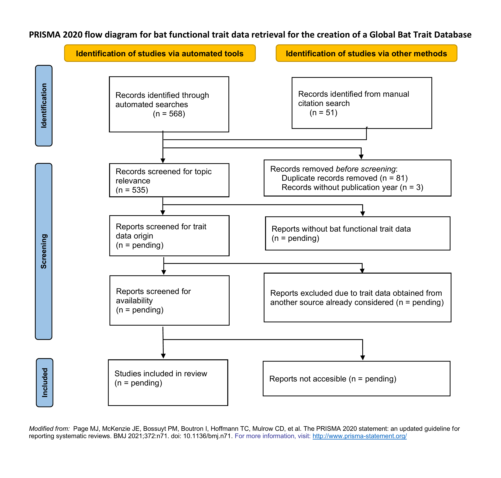
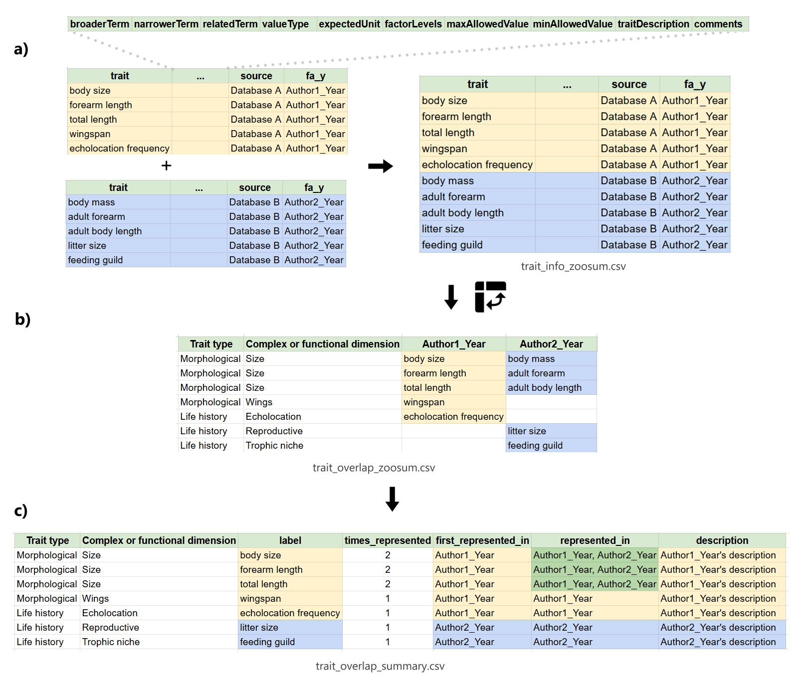

Global Bat Trait Database: Literature review and trait selection process
Introduction
Functional traits (FT) – well-defined, measurable, morphophysiological and ecological characteristics that influence the fitness of individuals – have been used to model numerous ecological processes, as well as responses to environmental changes in diverse organisms and biological communities (Funk et al., 2017; Zakharova et al., 2019; Etard et al., 2020; Dawson et al., 2021). Thanks to their utility, their use has been extended to numerous taxonomic groups, unfortunately, the available information about species’ functional traits is incomplete (Rauenkerian shortfall; Hortal et al. 2015). Mainly, there are geographical biases (e.g. towards easily accessible areas) and taxonomic biases (e.g. towards abundant, easy-to-catch, or charismatic species) (Verde-Arregoitia, 2016; Troudet et al., 2017; dos Santos et al., 2020; Etard et al., 2020; García-Roselló et al., 2023). The lack of available information and existing biases limit the interpretation of results about the importance of FTs in a region or taxon studied, as well as the extrapolation and generalization to other regions or species not considered, therefore, the quantity and quality of the information must be evaluated (Zakharova et al., 2019; Etard et al., 2020). As in other organisms, a FT approach has recently been promoted for the study of bats and their responses to changes in their environment (Castillo-Figueroa & Pérez-Torres, 2021). However, despite their importance, to date there is no robust assessment of the completeness and geographic and taxonomic representativeness of functional traits for the order Chiroptera at a global level. Therefore, we ask the following question: Which are the most important gaps and biases in knowledge of the functional traits of the order Chiroptera at a global level? Given the available evidence on the gaps and biases found in trait assessments for several taxa, as well as in previous assessments made for specific dimensions of bat functional traits, we hypothesize that taxonomic and geographic biases will be found in the study of the bat functional traits towards taxa which are more easily captured and widely distributed, as well as towards the most accessible and studied areas.
The specific objectives of this chapter are: 1) to identify the gaps and biases in the knowledge of the functional traits of the order Chiroptera at a global level, and 2) to create a global bat functional trait database.
Methods
Literature review
A literature search of the Web of Science database and Google Scholar search engine was conducted on February, 2025, using the following keywords: (bat OR bats OR chiropter*) AND (review OR trait OR traits OR functional traits OR functional trait OR characteristic OR characteristics OR morphological OR life history). The literature search was not restricted in the date range and it included studies from 1966 up to 2025. Entries not related to bats were excluded from the search terms: (vaccines OR biomaterial OR bio-medical OR brown adipose tissue OR therapeutics OR biosynthesis). The first 300 listed results were inspected from the Web of Science and Google Scholar searches, as this number is also reported in published systematic reviews of bats (e.g. Crane et al., 2022) (Figure 1). The reference lists and supplementary information from relevant publications were also inspected (AfroBat, EuroBaTrait) for further relevant entries.
The inclusion criteria for entries considered was:
Multi-taxa or bat-specific studies that included information on bat functional traits published on peer-reviewed journals.
- This includes data papers, review articles, and case studies.
Multi-taxa or bat-specific publications that included information on bat functional traits but were not published on peer-reviewed journals.
- This includes online databases, books, book chapters, and reports.
Studies published in the english or spanish languages.
The bat functional trait information available from the Handbook of Mammals of the World (Wilson & Mittermeier 2019, obtained from Sherman et al., 2024), as well as the Mammalian Species records, which are published by the American Society of Mammalogists, will also be obtained for integration into the database.
- Eeach entry will be screened manually to identify publications reporting bat functional trait data. The following columns were added to the csv file for screening purposes.
- includes_bats_in_title: Does the publication have the “bat” or any variation of the word in the title?
- includes_traits_in_title: Does the publication have the “trait” or any variation of the word in the title?
- to_keep: Column to exclude duplicates, non english or spanish publications, not excluded by automatic tools. Also excludes publications not accessible for initial screening.
- includes_trait_info: Does the publication include bat functional trait data?
- fully_included_in_another_source: Is the trait data fully obtained from any other study already included in the literature review?
Functional trait selection process
A total of 12 studies were screened for the selection of the functional traits to be evaluated (Table 1). The proposal for a trait-based approach for the study of bats (Castillo-Figueroa & Pérez-Torres 2021) was used as a baseline to define the trait types, complex or functional dimensions, and traits to be evaluated. Full citation data is contained in the bib/trait_categories folder as .bib, .csv and .docx files. Studies were included if they were:
- A multi-taxa compilation of functional trait data which includes bats.
- A bat-specific compilation of functional trait data.
- A dimension-specific compilation of bat functional trait data.
In addition to wing morphology traits, echolocation traits are also highly relevant for the study of bat ecology and conservation (Zamora et al., 2016; Zamora et al., 2020). However, the databases specialized for bat echolocation calls (e.g. ChiroVox; Görföl et al., 2022) usually contain the .wav files instead of the extracted parameters reported in other databases (e.g. frequency of the call, interpulse duration, pulse duration, among others). For this reason, such databases are not included in the studies screened for the trait selection process.
The trait description information (e.g. trait name, type of variable, description) was obtained from each study when available. Names and definitions for the trait descriptors were obtained from the Ecological Trait-data Standard (Schneider et al., 2019). For a detailed glossary of terms view metadata/trait_categories/trait_categories_glossary.xlsx.
| Citation | Title | Published in |
|---|---|---|
| Castillo-Figueroa & Pérez-Torres, 2021 | On the development of a trait-based approach for studying Neotropical bats | Papéis Avulsos de Zoologia |
| Gonçalves-Souza et al., 2024 | ZooTraits: An R shiny app for exploring animal trait data for ecological and evolutionary research | Ecology and Evolution |
| Soria et al., 2021 | COMBINE: a coalesced mammal database of intrinsic and extrinsic traits | Ecology |
| Cosentino et al., 2023 | A dataset on African bats’ functional traits | Scientific Data |
| Froidevaux et al., 2023 | A species-level trait dataset of bats in Europe and beyond | Scientific Data |
| Crane et al., 2021 | Limitations and gaps in global bat wing morphology trait data | Mammal Review |
| Myhrvold et al., 2015 | An amniote life‐history database to perform comparative analyses with birds, mammals, and reptiles: Ecological Archives E096‐269 | Ecology |
| Gonçalves et al., 2018 | ATLANTIC MAMMAL TRAITS: a data set of morphological traits of mammals in the Atlantic Forest of South America | Ecology |
| Tanalgo et al., 2022 | DarkCideS 1.0, a global database for bats in karsts and caves | Scientific Data |
| Wilkinson & South, 2002 | Life history, ecology and longevity in bats | Aging Cell |
| Herberstein et al., 2022 | AnimalTraits - a curated animal trait database for body mass, metabolic rate and brain size | Scientific Data |
| Geiselman & Ember, 2024 | Bat Eco-Interactions — batbase.org | batbase.org |
Once the trait descriptors from each study were obtained, the data sheets were combined by stacking the data on top of each other using the column names specified previously (Figure 2a). A new data sheet was generated where each row is a different functional trait and each column is a study (Figure 2b). If any given functional trait is included in two or more studies, they occupy the same row in a different column, each with the name assigned by the study indicated in the column header (Figure 2b). If any given trait is present in a study (Database A), but absent in another (Database B), the respective row in the Database B was left empty. Following this methodology, any additional functional trait reported in a study included afterwards will generate a new row without affecting the studies already included. The number of times in which any given trait was represented in all the studies was counted, and the descriptors of each trait were obtained from the first publication in which it was identified (Figure 2c).

Preliminary results
Literature review
After the removal of duplicated and non-relevant entries, a total of 535 studies were obtained from the literature search.
| Title | Year | Study | DOI | Trait data directly available |
|---|---|---|---|---|
| A database of common vampire bat reports | 2022 | Scientific Data | 10.1038/s41597-022-01140-9 | yes |
| A dataset on African bats’ functional traits | 2023 | Scientific Data | 10.1038/s41597-023-02472-w | yes |
| A global database for metacommunity ecology, integrating species, traits, environment and space | 2020 | SCIENTIFIC DATA | 10.1038/s41597-019-0344-7 | yes |
| A species-level trait dataset of bats in Europe and beyond | 2023 | Scientific Data | 10.1038/s41597-023-02157-4 | yes |
| Activity following arousal in winter in North American vespertilionid bats | 2006 | MAMMAL REVIEW | NA | no |
| An integrative approach to understanding diversity patterns and assemblage rules in Neotropical bats | 2023 | Scientific Reports | 10.1038/s41598-023-35100-z | yes |
| An optimum body size for mammals? Comparative evidence from bats | 1997 | Functional Ecology | 10.1046/j.1365-2435.1997.00149.x | no |
| AnimalTraits - a curated animal trait database for body mass, metabolic rate and brain size | 2022 | Scientific Data | 10.1038/s41597-022-01364-9 | yes |
| ATLANTIC MAMMAL TRAITS: a data set of morphological traits of mammals in the Atlantic Forest of South America | 2018 | Ecology | 10.1002/ecy.2106 | yes |
| ATLANTIC POLLINATION: a data set of flowers and interaction with nectar-feeding vertebrates from the Atlantic Forest | 2022 | Ecology | 10.1002/ecy.3595 | yes |
| Atmospheric humidity affects global variation of bat echolocation via indirect effects | 2022 | FRONTIERS IN ECOLOGY AND EVOLUTION | NA | yes |
| Bat Biology, Genomes, and the Bat1K Project: To Generate Chromosome-Level Genomes for All Living Bat Species | 2018 | Annual Review of Animal Biosciences | 10.1146/annurev-animal-022516-022811 | yes |
| Bat-borne viruses in Africa: a critical review | 2020 | JOURNAL OF ZOOLOGY | NA | no |
| Bat functional traits associated with environmental, landscape, and conservation variables in Neotropical dry forests | 2023 | FRONTIERS IN FORESTS AND GLOBAL CHANGE | NA | yes |
| Bat mating systems-A review and recategorisation | 2024 | ECOLOGY AND EVOLUTION | NA | yes |
| Bat pollination in the Caatinga: A review of studies and peculiarities of the system in the new world's largest and most diverse seasonally dry tropical forest | 2023 | Flora | 10.1016/j.flora.2023.152332 | yes |
| BatFly: A database of Neotropical bat–fly interactions | 2024 | Ecology | 10.1002/ecy.4249 | yes |
| Bats and bat-borne diseases: a perspective on Australian megabats | 2013 | AUSTRALIAN JOURNAL OF ZOOLOGY | NA | no |
| Bats as bushmeat: a global review | 2009 | ORYX | NA | yes |
| Bats as prey of diurnal birds: a global perspective | 2016 | Mammal Review | 10.1111/mam.12060 | yes |
| Beyond head and wings: Unveiling influence of diet, body size, and phylogeny on the evolution of the femur in phyllostomid bats | 2025 | The Anatomical Record | 10.1002/ar.25551 | yes |
| Body Mass of Late Quaternary Mammals | 2003 | Ecology | 10.1890/02-9003 | yes |
| Cerrado bat community assembly is determined by both present-day and historical factors | 2024 | Journal of Biogeography | 10.1111/jbi.14798 | yes |
| ChiroVox: a public library of bat calls | 2022 | PeerJ | 10.7717/peerj.12445 | yes |
| COMADRE: a global data base of animal demography | 2016 | Journal of Animal Ecology | 10.1111/1365-2656.12482 | no |
| COMBINE: a coalesced mammal database of intrinsic and extrinsic traits | 2021 | Ecology | 10.1002/ecy.3344 | yes |
| Correlated evolution between body size and echolocation in bats (order Chiroptera) | 2024 | BMC Ecology and Evolution | 10.1186/s12862-024-02231-4 | yes |
| DarkCideS 1.0, a global database for bats in karsts and caves | 2022 | Scientific Data | 10.1038/s41597-022-01234-4 | yes |
| DBatVir: the database of bat-associated viruses | 2014 | Database | 10.1093/database/bau021 | yes |
| Drivers of bat roles in Neotropical seed dispersal networks: abundance is more important than functional traits | 2020 | Oecologia | 10.1007/s00442-020-04662-4 | yes |
| Ecological and evolutionary characteristics of anthropogenic roosting ability in bats of the world | 2024 | iScience | 10.1016/j.isci.2024.110369 | yes |
| Ecological Morphology of Neotropical Bat Wing Structures | 2020 | Zoological Studies | 10.6620/ZS.2020.59-60 | yes |
| Economic value of bat predation services - A review and new estimates from macadamia orchards | 2018 | ECOSYSTEM SERVICES | 10.1016/j.ecoser.2017.11.015 | yes |
| Effects of climate change on life-history traits in hibernating mammals | 2023 | MAMMAL REVIEW | 10.1111/mam.12308 | yes |
| Establishing macroecological trait datasets: digitalization, extrapolation, and validation of diet preferences in terrestrial mammals worldwide | 2014 | Ecology and Evolution | 10.1002/ece3.1136 | yes |
| Evolution of Body Mass in Bats: Insights from a Large Supermatrix Phylogeny | 2020 | Journal of Mammalian Evolution | 10.1007/s10914-018-9447-8 | yes |
| Evolution of litter size in bats and its influence on longevity and roosting ecology | 2021 | Biological Journal of the Linnean Society | 10.1093/biolinnean/blaa203 | yes |
| Evolutionary history and precipitation seasonality shape niche overlap in Neotropical bat–plant pollination networks | 2023 | Biotropica | 10.1111/btp.13181 | yes |
| Exploration of the morphology and functional implications of the forelimb in bats (Mammalia, Chiroptera) from the Neotropical region | 2023 | Zoomorphology | 10.1007/s00435-022-00588-y | yes |
| Global patterns of functional trait variation along aridity gradients in bats | 2021 | Global Ecology and Biogeography | 10.1111/geb.13278 | yes |
| Go big or go fish: morphological specializations in carnivorous bats | 2016 | Proceedings of the Royal Society B: Biological Sciences | 10.1098/rspb.2016.0615 | yes |
| Home ranges of Recent mammals | 2015 | Ecology | 10.1890/14-2264.1 | no |
| HomeRange: A global database of mammalian home ranges | 2023 | Global Ecology and Biogeography | 10.1111/geb.13625 | yes |
| Interindividual communication by bats via echolocation | 2023 | CANADIAN JOURNAL OF ZOOLOGY | 10.1139/cjz-2022-0121 | no |
| Interspecific competition in bats: state of knowledge and research challenges | 2020 | Mammal Review | 10.1111/mam.12180 | yes |
| Life history, ecology and longevity in bats | 2002 | AGING CELL | 10.1046/j.1474-9728.2002.00020.x | yes |
| Limitations and gaps in global bat wing morphology trait data | 2022 | Mammal Review | 10.1111/mam.12270 | yes |
| Multiple mortality events in bats: a global review | 2016 | MAMMAL REVIEW | 10.1111/mam.12064 | yes |
| NeoBat Interactions: A data set of bat-plant interactions in the Neotropics | 2022 | Ecology | 10.1002/ecy.3640 | yes |
| Phylogeny and foraging behaviour shape modular morphological variation in bat humeri | 2021 | Journal of Anatomy | 10.1111/joa.13380 | yes |
| Redefining the study of sexual dimorphism in bats: following the odour trail | 2021 | Mammal Review | 10.1111/mam.12232 | yes |
| Redefining the study of sexual dimorphism in bats: following the odour trailPalabras clave | 2021 | MAMMAL REVIEW | NA | yes |
| Review and meta-analysis of correlates of home range size in bats | 2024 | JOURNAL OF MAMMALOGY | NA | no |
| ROOST FIDELITY OF BATS - A REVIEW | 1995 | JOURNAL OF MAMMALOGY | NA | no |
| Scale-dependent influences of environmental, historical, and spatial processes on taxonomic and functional beta diversity of Japanese bat assemblages | 2024 | Ecology and Evolution | 10.1002/ece3.11277 | yes |
| Sensory adaptations reshaped intrinsic factors underlying morphological diversification in bats | 2021 | BMC Biology | 10.1186/s12915-021-01022-3 | yes |
| Systematic Review of the Roost-Site Characteristics of North American Forest Bats: Implications for Conservation | 2020 | DIVERSITY-BASEL | NA | yes |
| TetraDENSITY 2.0—A Database of Population Density Estimates in Tetrapods | 2024 | Global Ecology and Biogeography | 10.1111/geb.13929 | yes |
| The Global Virome in One Network (VIRION): an Atlas of Vertebrate-Virus Associations | 2022 | mBio | 10.1128/mbio.02985-21 | yes |
| The Sonozotz project: Assembling an echolocation call library for bats in a megadiverse country | 2020 | Ecology and Evolution | 10.1002/ece3.6245 | no |
| Trait-dependent tolerance of bats to urbanization: a global meta-analysis | 2018 | Proceedings of the Royal Society B: Biological Sciences | 10.1098/rspb.2018.1222 | yes |
| Updated distribution maps for neotropical bats in the superfamily Noctilionoidea | 2018 | Ecology | 10.1002/ecy.2404 | yes |
| Urban affinity and its associated traits: A global analysis of bats | 2022 | GLOBAL CHANGE BIOLOGY | NA | yes |
| Urbanisation generates multiple trait syndromes for terrestrial animal taxa worldwide | 2023 | NATURE COMMUNICATIONS | NA | yes |
| Vulnerability of bat-plant pollination interactions due to environmental change | 2021 | GLOBAL CHANGE BIOLOGY | NA | yes |
| Why bats matters: A critical assessment of bat-mediated ecological processes in the Neotropics | 2020 | European Journal of Ecology | 10.17161/eurojecol.v6i1.13824 | no |
| ZooTraits: An R shiny app for exploring animal trait data for ecological and evolutionary research | 2024 | Ecology and Evolution | 10.1002/ece3.11334 | yes |
| ZOVER: the database of zoonotic and vector-borne viruses | 2022 | Nucleic Acids Research | 10.1093/nar/gkab862 | yes |
Functional trait selection process
A total of 345 different traits were identified in the studies consulted (Table 3). Four trait types are represented: Morphological (n traits = 70), Life history (n traits = 259), Genetic (n traits = 9), and Interactions (n traits = 7). The types are subdivided into 17 complexes or functional dimensions: Size, Wings, Pollex, Hindlimbs, Head, and Tail (Morphological); Reproductive, Physiological, Behavioral, Trophic niche, Spatial niche, Echolocation, Conservation, and Threats (Life history); Genetic composition (Genetic); and Ecological interactions and Pathogens (Interactions).
| Trait type | Complex or functional dimension | Label | Times represented | Variable type | Description | Represented in (FirstAuthor_Year) |
|---|---|---|---|---|---|---|
| Morphological | Size | Body mass | 9 | numeric | Based on weight | castillo_figueroa_2021, soria_2021, cosentino_2023, froidevaux_2023, myhrvold_2015, goncalvez_2018, tanalgo_2022, herberstein_2022, goncalvez_souza_2023 |
| Morphological | Size | biomass | 1 | numeric | % B = Contribution of species to total Biomass | goncalvez_souza_2023 |
| Morphological | Size | female_body_mass_g | 2 | numeric | Body mass of female adults. | myhrvold_2015, wilkinson_2002 |
| Morphological | Size | male_body_mass_g | 1 | numeric | Body mass of male adults. | myhrvold_2015 |
| Morphological | Size | no_sex_body_mass_g | 1 | numeric | Body mass of unspecified adults. | myhrvold_2015 |
| Morphological | Size | original body mass | 1 | numeric | Unstandardised mass or weight value from source document | herberstein_2022 |
| Morphological | Size | Total length | 6 | numeric | Measurement from the tail (if any) to the head (tail + body + head). If there is no tail, the measurement encompasses the lower end of the body to the head | castillo_figueroa_2021, soria_2021, cosentino_2023, myhrvold_2015, goncalvez_2018, goncalvez_souza_2023 |
| Morphological | Size | no_sex_svl_cm | 1 | numeric | Measure from tip of the snout to the opening of the cloaca or tail base for unspecified adults. | myhrvold_2015 |
| Morphological | Size | Head body length (F/M/U) | 1 | numeric | The length from tip of nose to anus | cosentino_2023 |
| Morphological | Size | male_svl_cm | 1 | numeric | Measure from tip of the snout to the opening of the cloaca or tail base for male adults. | myhrvold_2015 |
| Morphological | Size | female_svl_cm | 1 | numeric | Measure from tip of the snout to the opening of the cloaca or tail base for female adults. | myhrvold_2015 |
| Morphological | Size | Forearm length | 6 | numeric | Measurement from the base of the elbow (tip of the olecranon process) to the distal region of the forearm where it joins the carpus | castillo_figueroa_2021, soria_2021, cosentino_2023, froidevaux_2023, goncalvez_2018, goncalvez_souza_2023 |
| Morphological | Size | Sexual dimorphism in size | 1 | categorical | Presence of sexual dimorphism in size | cosentino_2023 |
| Morphological | Wings | Length of the third digit | 2 | numeric | In biological collections the trait is the result of the sum of the metacarpus and its three phalanges. The metacarpus is measured from the joint with the phalanx to the junction with the carpus. The phalanx is measured as the maximum distance between the joints. In the field, the trait is measured from the junction of the metacarpus with the carpus to the tip of the third phalanx | castillo_figueroa_2021, froidevaux_2023 |
| Morphological | Wings | Length of the fifth digit | 2 | numeric | In biological collections the trait is the result of the sum of the metacarpus and its two phalanges. The metacarpus is measured from the joint with the phalanx to the junction with the carpus. The phalanx is measured as the maximum distance between the joints. In the field, it is measured from the junction of the metacarpus with the carps to the tip of the second phalanx | castillo_figueroa_2021, froidevaux_2023 |
| Morphological | Wings | Wing loading | 5 | numeric | Wing loading (Wl) is body mass in kg times acceleration of gravity (Mg) divided by its wing area in m2 (S); *gravity acceleration = 9.8 m/s2; Wl = Mg/S (N/m2) | castillo_figueroa_2021, cosentino_2023, froidevaux_2023, crane_2022, goncalvez_souza_2023 |
| Morphological | Wings | total_wing_loading | 1 | numeric | Body weight divided by lifting_surface_area | crane_2022 |
| Morphological | Wings | relative_partial_loading | 2 | numeric | partial_wing_loading divided by body mass raised to the 1/3 power. Body mass, not weight should be used | crane_2022, goncalvez_souza_2023 |
| Morphological | Wings | relative_total_loading | 1 | numeric | total_wing_loading divided by body mass raised to 1/3. Body mass, not weight should be used | crane_2022 |
| Morphological | Wings | Aspect ratio | 5 | numeric | Aspect ratio (A) is the result of the wing span squared (m2) (B) divided by wing area (m2) (S); A = B2/S | castillo_figueroa_2021, cosentino_2023, froidevaux_2023, crane_2022, goncalvez_souza_2023 |
| Morphological | Wings | total_aspect_ratio | 1 | numeric | The wingspan squared, divided by lifting_surface_area | crane_2022 |
| Morphological | Wings | Tip shape index | 2 | numeric | Tip shape index (I) is the tip area ratio (Ts) divided by tip length ratio (Tl) minus Ts; I = Ts/(Tl-Ts) | castillo_figueroa_2021, goncalvez_souza_2023 |
| Morphological | Wings | Wing span | 4 | numeric | Measurement taken from tip to tip of the extended wings held along to the long axis of the body | castillo_figueroa_2021, cosentino_2023, crane_2022, goncalvez_souza_2023 |
| Morphological | Wings | Wing length (F/M/U) | 1 | numeric | Length of the wing | cosentino_2023 |
| Morphological | Wings | Wing area (F/M/U) | 3 | numeric | Area of the two wings | cosentino_2023, crane_2022, goncalvez_souza_2023 |
| Morphological | Wings | lifting_surface_area | 1 | numeric | The total area of the patagium, uropatagium (if present), and body excluding the head | crane_2022 |
| Morphological | Wings | wing_area_rec | 1 | numeric | The rectangular approximation of the patagium based on the wing length (measured from the edge of the body to the wing tip) multiplied by the wing width (measured from the end of the fifth digit to the tip of the fifth digit) | crane_2022 |
| Morphological | Pollex | Length of the pollex without claw | 1 | numeric | Measurement from the beginning of the phalanx of finger to the beginning of the claw | castillo_figueroa_2021 |
| Morphological | Pollex | Length of the pollex with claw | 1 | numeric | Measurement from the beginning of the phalanx of the thumb to the tip of the claw | castillo_figueroa_2021 |
| Morphological | Hindlimbs | Length of the foot without claw | 1 | numeric | Measurement from the joint with the tibia to the beginning of the claws | castillo_figueroa_2021 |
| Morphological | Hindlimbs | length of the foot with claw | 3 | numeric | Measurement from the tibia joint to the tip of the claw | castillo_figueroa_2021, cosentino_2023, goncalvez_souza_2023 |
| Morphological | Hindlimbs | Length of the tibia | 1 | numeric | Measurement from the joint with the femur to the joint with the foot | castillo_figueroa_2021 |
| Morphological | Hindlimbs | Length of calcaneus | 1 | numeric | Measure from the base of the calcaneus to the tip of it | castillo_figueroa_2021 |
| Morphological | Head | Length of the ear | 2 | numeric | Measure from the base of the ear to its most apical region | castillo_figueroa_2021, goncalvez_souza_2023 |
| Morphological | Head | Length of tragus | 1 | numeric | Measure from the base to the tip of the structure | castillo_figueroa_2021 |
| Morphological | Head | Length of nose leaf | 1 | numeric | Measurement from the base of the nasal horseshoe to the tip of the lancet | castillo_figueroa_2021 |
| Morphological | Head | Inner nostril width ratio | 1 | numeric | Ratio of the cranial width to the inner nostril width | castillo_figueroa_2021 |
| Morphological | Head | brain_mass_g | 2 | numeric | Weight of the brain of an adult individual in grams | soria_2021, herberstein_2022 |
| Morphological | Head | original brain size | 1 | numeric | Unstandardised brain size from source document | herberstein_2022 |
| Morphological | Head | Inter = Narrowest breadth of skull | 1 | numeric | Definition not specified in database; Check in article for more details | goncalvez_souza_2023 |
| Morphological | Head | greatest skull length | 1 | numeric | Selected skull dimensions were the greatest length, braincase and zygomatic breadth. Because these tree variables are highly correlated (Appendix 3), we ran a principal component analysis (PCA) to summarize the three measurements in a unique variable (PC1). | goncalvez_souza_2023 |
| Morphological | Head | braincase breadth | 1 | numeric | Selected skull dimensions were the greatest length, braincase and zygomatic breadth. Because these tree variables are highly correlated (Appendix 3), we ran a principal component analysis (PCA) to summarize the three measurements in a unique variable (PC1). | goncalvez_souza_2023 |
| Morphological | Head | zygomatic breadth | 1 | numeric | Selected skull dimensions were the greatest length, braincase and zygomatic breadth. Because these tree variables are highly correlated (Appendix 3), we ran a principal component analysis (PCA) to summarize the three measurements in a unique variable (PC1). | goncalvez_souza_2023 |
| Morphological | Head | Mast = Mastoid breadth | 1 | numeric | Definition not specified in database; Check in article for more details | goncalvez_souza_2023 |
| Morphological | Head | condylobasal length | 1 | c("numeric", "numeric", "numeric", "numeric", "numeric", "numeric") | c("", "", "", "", "", "") | goncalvez_souza_2023 |
| Morphological | Head | length of maxillary toothrow | 1 | c("numeric", "numeric", "numeric") | c("", "", "") | goncalvez_souza_2023 |
| Morphological | Head | breadth of post-orbital constriction | 1 | c("numeric", "numeric", "numeric") | c("", "", "") | goncalvez_souza_2023 |
| Morphological | Head | breadth across upper molars | 1 | c("numeric", "numeric", "numeric", "numeric") | c("", "", "", "") | goncalvez_souza_2023 |
| Morphological | Head | Postorbital Width (PW) | 1 | numeric | Definition not specified in database; Check in article for more details | goncalvez_souza_2023 |
| Morphological | Head | Posterior Skull width (PSW) | 1 | numeric | Definition not specified in database; Check in article for more details | goncalvez_souza_2023 |
| Morphological | Head | Palatal Width at canines (PW) | 1 | numeric | Definition not specified in database; Check in article for more details | goncalvez_souza_2023 |
| Morphological | Head | Palatal Width at first molar (PW1) | 1 | numeric | Definition not specified in database; Check in article for more details | goncalvez_souza_2023 |
| Morphological | Head | Total Palate Length (TPL) | 1 | numeric | Definition not specified in database; Check in article for more details | goncalvez_souza_2023 |
| Morphological | Head | Anterior Skull Length (ASL) | 1 | numeric | Definition not specified in database; Check in article for more details | goncalvez_souza_2023 |
| Morphological | Head | Post-Palatal length (PPL) | 1 | numeric | Definition not specified in database; Check in article for more details | goncalvez_souza_2023 |
| Morphological | Head | Dentary Depth under first molar (DD) | 1 | numeric | Definition not specified in database; Check in article for more details | goncalvez_souza_2023 |
| Morphological | Head | Coronoid Process Height (CPH) | 1 | numeric | Definition not specified in database; Check in article for more details | goncalvez_souza_2023 |
| Morphological | Head | Condyle height (CH) | 1 | numeric | Definition not specified in database; Check in article for more details | goncalvez_souza_2023 |
| Morphological | Head | CI = Condylo-incisive length | 1 | numeric | Definition not specified in database; Check in article for more details | goncalvez_souza_2023 |
| Morphological | Head | Condyle to Canine bite point distance (CC) | 1 | numeric | Definition not specified in database; Check in article for more details | goncalvez_souza_2023 |
| Morphological | Head | Condyle to first molar point distance (Cm1) | 1 | numeric | Definition not specified in database; Check in article for more details | goncalvez_souza_2023 |
| Morphological | Head | CM3 | 2 | numeric | Length of upper tooth row | froidevaux_2023, goncalvez_souza_2023 |
| Morphological | Head | Total Dentary Length (TDL) | 1 | numeric | Definition not specified in database; Check in article for more details | goncalvez_souza_2023 |
| Morphological | Head | Condyle-Coronoid Length (CCL) | 1 | numeric | Definition not specified in database; Check in article for more details | goncalvez_souza_2023 |
| Morphological | Head | Coronoid-Angular Length (CAL) | 1 | numeric | Definition not specified in database; Check in article for more details | goncalvez_souza_2023 |
| Morphological | Head | Mandibular toothrow length (MAN) | 1 | numeric | Definition not specified in database; Check in article for more details | goncalvez_souza_2023 |
| Morphological | Head | Mand = Mandibular length | 1 | numeric | Definition not specified in database; Check in article for more details | goncalvez_souza_2023 |
| Morphological | Head | LCBLCCRatio | 1 | numeric | Ratio condylobasal length/condylocanine length | froidevaux_2023 |
| Morphological | Tail | Tail length | 4 | numeric | Measurement from the insertion of the tail in the body to its distal end | castillo_figueroa_2021, cosentino_2023, goncalvez_2018, goncalvez_souza_2023 |
| Morphological | Tail | Uropatagium area | 1 | numeric | Measurement of the surface area of the intrafemoral membrane | castillo_figueroa_2021 |
| Life history | Reproductive | Litters per year | 5 | numeric | Number of litters produced per year | castillo_figueroa_2021, soria_2021, cosentino_2023, myhrvold_2015, wilkinson_2002 |
| Life history | Reproductive | Litter size | 6 | numeric | Number of pups produced per litter | castillo_figueroa_2021, soria_2021, cosentino_2023, froidevaux_2023, myhrvold_2015, goncalvez_souza_2023 |
| Life history | Reproductive | Gestation duration | 5 | numeric | Length of the pregnancy expressed in days | castillo_figueroa_2021, soria_2021, cosentino_2023, froidevaux_2023, myhrvold_2015 |
| Life history | Reproductive | Active gestation length | 1 | numeric | The length of active gestation | cosentino_2023 |
| Life history | Reproductive | Lactation duration | 2 | numeric | Length of the lactation expressed in days | castillo_figueroa_2021, cosentino_2023 |
| Life history | Reproductive | teat_number_n | 1 | numeric | Total number of teats present in an individual of the species | soria_2021 |
| Life history | Reproductive | neonate_mass_g | 3 | numeric | Weight of an individual at birth in grams | soria_2021, cosentino_2023, myhrvold_2015 |
| Life history | Reproductive | Neonate head-body length | 2 | numeric | The head-body length of infants | cosentino_2023, myhrvold_2015 |
| Life history | Reproductive | weaning_age_d | 4 | numeric | Age at which primary nutritional dependency on the mother ends and independent foraging begins in days | soria_2021, cosentino_2023, froidevaux_2023, myhrvold_2015 |
| Life history | Reproductive | weaning_mass_g | 3 | numeric | Weight at weaning in grams | soria_2021, cosentino_2023, myhrvold_2015 |
| Life history | Reproductive | Weaning head-body length | 1 | numeric | The head-body length of weanlings | cosentino_2023 |
| Life history | Reproductive | generation_length_d | 2 | numeric | Average age of parents of the current cohort in days | soria_2021, tanalgo_2022 |
| Life history | Reproductive | Reproductive status | 2 | categorical | Reproductive stage that involves hormonal concentration (progesterone and estradiol peaks) and physiological changes in females (corpus luteum and ovarian follicle). Vaginal smears can reveal superficial nucleated cells (proestrus), superficial non-nucleated cells parabasal (estrus), intermediate cells (metestrus) and parabasal cells (anestrus) in bat females. Females can be considered reproductive when they presented a dominance in proestrus, estrus, and metestrus. By contrast, non-reproductive females are when the dominant stage is anestrus. This can be measured individually and can also be expressed in frequencies or population averages of each stage. For males, reproductive status can be determined by examining testes (scrotted or not), thus obtaining frequencies or population averages of each condition. | castillo_figueroa_2021, goncalvez_2018 |
| Life history | Reproductive | sex | 2 | categorical | Sex of the specimens | goncalvez_2018, herberstein_2022 |
| Life history | Reproductive | Parental cares | 1 | categorical | Presence of parental cares | cosentino_2023 |
| Life history | Reproductive | age_first_reproduction_d | 2 | numeric | Age at which females give birth to their first litter or their young attach to teats in days | soria_2021, cosentino_2023 |
| Life history | Reproductive | interbirth_interval_d | 3 | numeric | Time between reproduction events in days | soria_2021, cosentino_2023, myhrvold_2015 |
| Life history | Reproductive | mean birth date | 1 | categorical | Months of year | goncalvez_souza_2023 |
| Life history | Reproductive | Sperm retention | 1 | categorical | Presence of sperm retention | cosentino_2023 |
| Life history | Reproductive | Delayed implantation | 1 | categorical | Presence of any lag in the implantation | cosentino_2023 |
| Life history | Reproductive | Delayed embryonic development | 1 | categorical | Presence of any lag in the embryonic period | cosentino_2023 |
| Life history | Reproductive | max_longevity_d | 3 | numeric | Maximum reported age at death for the species in days | soria_2021, froidevaux_2023, myhrvold_2015 |
| Life history | Reproductive | longevity_y | 2 | numeric | Age at death. | myhrvold_2015, wilkinson_2002 |
| Life history | Reproductive | Life-span in the wild | 1 | numeric | The length of life in the wild | cosentino_2023 |
| Life history | Reproductive | Life-span in captivity | 1 | numeric | The length of life in captivity | cosentino_2023 |
| Life history | Reproductive | age | 1 | categorical | Age of the specimens | goncalvez_2018 |
| Life history | Reproductive | status | 1 | categorical | Status of individual when measured | goncalvez_2018 |
| Life history | Reproductive | Sexual maturity age | 4 | numeric | Age at first reproductive event (adult) | castillo_figueroa_2021, soria_2021, cosentino_2023, myhrvold_2015 |
| Life history | Reproductive | female_maturity_d | 3 | numeric | The amount of time needed for a female to reach sexual maturity in days | soria_2021, froidevaux_2023, myhrvold_2015 |
| Life history | Reproductive | male_maturity_d | 3 | numeric | The amount of time needed for a male to reach sexual maturity in days | soria_2021, froidevaux_2023, myhrvold_2015 |
| Life history | Reproductive | female_svl_at_maturity_cm | 1 | numeric | Measure from tip of the snout to the opening of the cloaca or tail base at the time of maturity for females. | myhrvold_2015 |
| Life history | Reproductive | female_body_mass_at_maturity_g | 1 | numeric | Body mass at the time of maturity for females. | myhrvold_2015 |
| Life history | Reproductive | Mating systems | 1 | categorical | All the potential combinations between bats to find mate and copulate during reproductive season | castillo_figueroa_2021 |
| Life history | Reproductive | Polygamy | 1 | categorical | Mating system of the species | cosentino_2023 |
| Life history | Reproductive | Polyandry | 1 | categorical | Mating system of the species | cosentino_2023 |
| Life history | Reproductive | Polygyny | 1 | categorical | Mating system of the species | cosentino_2023 |
| Life history | Reproductive | Monogamy | 1 | categorical | Mating system of the species | cosentino_2023 |
| Life history | Physiological | Digestive capactiy | 1 | numeric | Bat capacity to obtain nutrients when consumption item differ in nutrient quality. Food intake response is defined as the relationship (following power function) between volumetric food intake and nutrient concentration | castillo_figueroa_2021 |
| Life history | Physiological | DigestiveEfficiency | 1 | numeric | A measure of how much of a feed or nutrient appears to be digested | froidevaux_2023 |
| Life history | Physiological | Gut size | 1 | numeric | Gut area of the total gut. Mean surface area. | castillo_figueroa_2021 |
| Life history | Physiological | Gut retention time of seeds | 1 | numeric | Time that the seeds are retained inside the gut of the bat until is expelled by feces. Mean number of time. | castillo_figueroa_2021 |
| Life history | Physiological | Type of lingual papillae | 1 | character | Shape of the papillae in tongue | castillo_figueroa_2021 |
| Life history | Physiological | Metabolic rate | 3 | numeric | Energy unit per time required by an individual to maintain its basal physiological functions. Mean energetic expenditure | castillo_figueroa_2021, froidevaux_2023, herberstein_2022 |
| Life history | Physiological | original metabolic rate | 1 | numeric | Unstandardised metabolic rate value from source document | herberstein_2022 |
| Life history | Physiological | mass-specific metabolic rate | 1 | numeric | Numeric standardised metabolic rate / body mass | herberstein_2022 |
| Life history | Physiological | BasalMetabolicRatePerc | 1 | numeric | Basal rate of metabolism as a percentage of the value expected from the equation described in Genoud et al. (2018) | froidevaux_2023 |
| Life history | Physiological | RestingMetabolicRate | 1 | numeric | The metabolic rate of an animal that is resting in a thermoneutral environment but not in the postabsorptive state | froidevaux_2023 |
| Life history | Physiological | HeartRateFlight | 1 | numeric | Heart rate during flight (beats per minutes, bpm) | froidevaux_2023 |
| Life history | Physiological | HeartRateResting | 1 | numeric | Heart rate during rest (beats per minutes, bpm) | froidevaux_2023 |
| Life history | Physiological | TotalEvaporativeWaterLossRate | 1 | numeric | The sum of cutaneous evaporative water loss and respiratory evaporative water loss | froidevaux_2023 |
| Life history | Physiological | SpeciesThermalIndex | 2 | numeric | Species thermal index: thermal preference of a species expressed as the average temperature a species experiences across its geographic range | froidevaux_2023, goncalvez_souza_2023 |
| Life history | Physiological | Body temperature | 3 | numeric | Individual capacity to survive at a specific temperature, either hot or cold temperatures | castillo_figueroa_2021, froidevaux_2023, herberstein_2022 |
| Life history | Physiological | ResponseToNightlyTemperature | 1 | numeric | Estimated response to temperature at night calculated from generalized linear mixed model | froidevaux_2023 |
| Life history | Physiological | ResponseToNightlyPrecipitation | 1 | numeric | Estimated response to the amount of precipitations at night calculated from generalized linear mixed model | froidevaux_2023 |
| Life history | Physiological | ResponseToNightlyWindSpeed | 1 | numeric | Estimated response to wind speed at night calculated from generalized linear mixed model | froidevaux_2023 |
| Life history | Physiological | hibernation_torpor | 4 | categorical | Individuals of the species go through hibernation or torpor | soria_2021, cosentino_2023, froidevaux_2023, wilkinson_2002 |
| Life history | Physiological | Hibernation length | 1 | numeric | Length of the hibernation period | cosentino_2023 |
| Life history | Physiological | HeartRateTorpor | 1 | numeric | Heart rate during torpor (beats per minutes, bpm) | froidevaux_2023 |
| Life history | Physiological | MaxTorporBoutDuration | 1 | numeric | Maximum torpor bout duration | froidevaux_2023 |
| Life history | Physiological | MeanTorporBoutDuration | 1 | numeric | Mean torpor bout duration | froidevaux_2023 |
| Life history | Behavioral | Migration | 3 | categorical | Species movement according its life history | castillo_figueroa_2021, cosentino_2023, goncalvez_souza_2023 |
| Life history | Behavioral | Sociality | 1 | categorical | Clustering of individuals | castillo_figueroa_2021 |
| Life history | Behavioral | social_group_size_n | 1 | numeric | Number of individuals in a group that spends most of their daily time together | soria_2021 |
| Life history | Behavioral | Territoriality (F/M/U) | 1 | categorical | Territoriality of the species individuals | cosentino_2023 |
| Life history | Behavioral | Foraging strategy | 2 | categorical | Behavioral strategy that is used to obtain food | castillo_figueroa_2021, goncalvez_souza_2023 |
| Life history | Behavioral | aerial | 1 | categorical | Definition not specified in database; Check in article for more details | goncalvez_souza_2023 |
| Life history | Behavioral | Hawking | 1 | categorical | Hawking strategy | cosentino_2023 |
| Life history | Behavioral | Gleaning | 2 | categorical | Gleaning strategy | cosentino_2023, goncalvez_souza_2023 |
| Life history | Behavioral | Flycatching | 1 | categorical | Flycatching strategy | cosentino_2023 |
| Life history | Behavioral | Trawling | 1 | categorical | Trawling strategy | cosentino_2023 |
| Life history | Behavioral | Hovering | 2 | categorical | Hovering strategy | cosentino_2023, goncalvez_souza_2023 |
| Life history | Behavioral | Perching | 1 | categorical | Perching strategy | cosentino_2023 |
| Life history | Behavioral | other | 1 | categorical | Definition not specified in database; Check in article for more details | goncalvez_souza_2023 |
| Life history | Behavioral | Activity pattern | 2 | numerical | Activity period of bat species within nocturnal time. Commonly spanned from 18:00h to 6:00h. Number of recording events per time hour | castillo_figueroa_2021, soria_2021 |
| Life history | Behavioral | Activity pattern/Dusk | 1 | categorical | Activity pattern of the species | cosentino_2023 |
| Life history | Behavioral | Activity pattern/Night | 1 | categorical | Activity pattern of the species | cosentino_2023 |
| Life history | Behavioral | Activity pattern/Dawn | 1 | categorical | Activity pattern of the species | cosentino_2023 |
| Life history | Behavioral | Activity pattern/Day | 1 | categorical | Activity pattern of the species | cosentino_2023 |
| Life history | Behavioral | SeasonalActivityPatternKurtosis | 1 | numeric | Kurtosis index of the seasonal activity pattern: kurtosis is the measure of the sharpness of the peak of a frequency distribution, with positive values indicating heavy tails and negative values indicated light tails | froidevaux_2023 |
| Life history | Behavioral | SeasonalActivityPatternSkewness | 1 | numeric | Skewness index of the seasonal activity pattern: if values <-0.5: indication of a substantially skewed distribution towards the spring, if values >0.5: indication of a substantially skewed distribution towards the autumn, if values [-0.5,5]: distribution fairly symmetrical with peak around mid-summer | froidevaux_2023 |
| Life history | Behavioral | total activity level | 1 | numeric | i.e. number of passes from all bat species including passes not identified to species level | goncalvez_souza_2023 |
| Life history | Trophic niche | Feeding guild | 6 | categorical | Based on the food item that is consumed mainly for a large part of bat life | castillo_figueroa_2021, soria_2021, froidevaux_2023, tanalgo_2022, wilkinson_2002, goncalvez_souza_2023 |
| Life history | Trophic niche | Insectivorous | 1 | categorical | Insectivorous species | cosentino_2023 |
| Life history | Trophic niche | Frugivorous | 1 | categorical | Frugivorous species | cosentino_2023 |
| Life history | Trophic niche | Nectarivorous | 1 | categorical | Nectarivorous species | cosentino_2023 |
| Life history | Trophic niche | Carnivorous | 1 | categorical | Carnivorous species | cosentino_2023 |
| Life history | Trophic niche | Diet specialization | 3 | numeric | Based on the percentage of the contribution of each food item to the total diet the species. Levin index as well as Morisita index can estimate dietary specialization | castillo_figueroa_2021, froidevaux_2023, goncalvez_souza_2023 |
| Life history | Trophic niche | FirstMainPreyItem | 2 | categorical | Order of the main prey item: Lepidoptera, Coleoptera, Diptera, Trichoptera, Hymenoptera, Orthoptera, Arachnida | froidevaux_2023, goncalvez_souza_2023 |
| Life history | Trophic niche | SecondMainPreyItem | 1 | categorical | Order of the second main prey item: Lepidoptera, Coleoptera, Diptera, Trichoptera, Hymenoptera, Orthoptera, Arachnida | froidevaux_2023 |
| Life history | Trophic niche | ThirdMainPreyItem | 1 | categorical | Order of the third main prey item: Lepidoptera, Coleoptera, Diptera, Trichoptera, Hymenoptera, Orthoptera, Arachnida | froidevaux_2023 |
| Life history | Trophic niche | dphy_invertebrate | 2 | numeric | Percentage of the diet composed of invertebrates | soria_2021, goncalvez_souza_2023 |
| Life history | Trophic niche | dphy_vertebrate | 2 | numeric | Percentage of the diet composed of vertebrates | soria_2021, goncalvez_souza_2023 |
| Life history | Trophic niche | dphy_plant | 2 | numeric | Percentage of the diet composed of plants and/or fungi | soria_2021, cosentino_2023 |
| Life history | Trophic niche | det_inv | 2 | numeric | Percentage of the diet composed of invertebrates | soria_2021, cosentino_2023 |
| Life history | Trophic niche | Arachnids | 1 | categorical | Presence of arachnids in the diet | cosentino_2023 |
| Life history | Trophic niche | Centipedes | 1 | categorical | Presence of chilopods in the diet | cosentino_2023 |
| Life history | Trophic niche | det_vend | 1 | numeric | Percentage of the diet composed of mammals, birds | soria_2021 |
| Life history | Trophic niche | Birds | 1 | categorical | Presence of birds in the diet | cosentino_2023 |
| Life history | Trophic niche | Mammals | 1 | categorical | Presence of mammals in the diet | cosentino_2023 |
| Life history | Trophic niche | blood | 1 | categorical | Definition not specified in database; Check in article for more details | goncalvez_souza_2023 |
| Life history | Trophic niche | det_vect | 2 | numeric | Percentage of the diet composed of reptiles, snakes, amphibians, salamanders | soria_2021, goncalvez_souza_2023 |
| Life history | Trophic niche | Reptiles | 1 | character(0) | character(0) | cosentino_2023 |
| Life history | Trophic niche | Amphibians | 1 | categorical | Presence of amphibians in the diet | cosentino_2023 |
| Life history | Trophic niche | det_vfish | 3 | numeric | Percentage of the diet composed of fish | soria_2021, cosentino_2023, goncalvez_souza_2023 |
| Life history | Trophic niche | det_vunk | 1 | numeric | Percentage of the diet composed of vertebrates – general or unknown | soria_2021 |
| Life history | Trophic niche | det_scav | 1 | numeric | Percentage of the diet composed of scavenge, garbage, offal, carcasses, trawlers, carrion | soria_2021 |
| Life history | Trophic niche | det_fruit | 3 | numeric | Percentage of the diet composed of fruit, drupes | soria_2021, cosentino_2023, goncalvez_souza_2023 |
| Life history | Trophic niche | det_nect | 3 | numeric | Percentage of the diet composed of nectar, pollen, plant exudates, gums | soria_2021, cosentino_2023, goncalvez_souza_2023 |
| Life history | Trophic niche | det_seed | 2 | numeric | Percentage of the diet composed of seed, maize, nuts, spores, wheat, grains | soria_2021, cosentino_2023 |
| Life history | Trophic niche | det_plantother | 1 | numeric | Percentage of the diet composed of other plant elements | soria_2021 |
| Life history | Trophic niche | Leaves | 1 | categorical | Presence of leaves in the diet | cosentino_2023 |
| Life history | Trophic niche | Flowers | 1 | character(0) | character(0) | cosentino_2023 |
| Life history | Trophic niche | det_diet_breadth_n | 1 | categorical | Number of prevalent (≥ 20%) EltonTraits dietary categories consumed | soria_2021 |
| Life history | Trophic niche | DietaryNicheBreadth | 1 | numeric | Dietary niche breadth calculated using Levin’s standardised index: higher values indicate large niche breadth | froidevaux_2023 |
| Life history | Trophic niche | DietaryDiversity | 1 | numeric | Dietary diversity calculated using Shannon-Weaver diversity index: higher values indicate highly diverse diet | froidevaux_2023 |
| Life history | Trophic niche | Bite force | 1 | numeric | Is the result of the interplay between the teeth, the masticatory muscles, the mandible, the maxillae, and temporomandibular joints. Bite force can be measured *in vivo* with an isometric Kistler force transducer or can be estimated with assessments of muscular and bony morphology from skulls using algorithms | castillo_figueroa_2021 |
| Life history | Trophic niche | Dental formula | 1 | character | Dental formula of the species | cosentino_2023 |
| Life history | Trophic niche | Number of teeth | 1 | numeric | Number of teeth of the species | cosentino_2023 |
| Life history | Spatial niche | Foraging hábitat | 3 | categorical | It is the space where the bat is found most of the time, especially when searching for food. Resource availability and conditions limit foraging habitat | castillo_figueroa_2021, soria_2021, goncalvez_souza_2023 |
| Life history | Spatial niche | above canopy | 1 | categorical | Definition not specified in database; Check in article for more details | goncalvez_souza_2023 |
| Life history | Spatial niche | canopy | 1 | categorical | Definition not specified in database; Check in article for more details | goncalvez_souza_2023 |
| Life history | Spatial niche | subcanopy | 1 | categorical | Definition not specified in database; Check in article for more details | goncalvez_souza_2023 |
| Life history | Spatial niche | understory | 1 | categorical | Definition not specified in database; Check in article for more details | goncalvez_souza_2023 |
| Life history | Spatial niche | Ground | 1 | categorical | Ground foraging | cosentino_2023 |
| Life history | Spatial niche | Aerial | 1 | categorical | Aerial foraging | cosentino_2023 |
| Life history | Spatial niche | Vegetation | 1 | categorical | Vegetation foraging | cosentino_2023 |
| Life history | Spatial niche | Clutter | 1 | categorical | Clutter foraging habitat | cosentino_2023 |
| Life history | Spatial niche | Clutter_Edge | 1 | categorical | Clutter-edge/ edge foraging habitat | cosentino_2023 |
| Life history | Spatial niche | Open | 3 | categorical | Open foraging habitat | cosentino_2023, froidevaux_2023, goncalvez_souza_2023 |
| Life history | Spatial niche | freshwater | 4 | categorical | The species spends a significant amount of time in freshwater bodies | soria_2021, cosentino_2023, froidevaux_2023, goncalvez_souza_2023 |
| Life history | Spatial niche | marine | 1 | categorical | The species spends a significant amount of time in oceans and/or seas | soria_2021 |
| Life history | Spatial niche | CriticalFeedingAreasForest | 1 | categorical | Forest as critical feeding areas: yes, no | froidevaux_2023 |
| Life history | Spatial niche | CriticalFeedingAreasWoodedRiparianHabitat | 1 | categorical | Wooded riparian habitat as critical feeding areas: yes, no | froidevaux_2023 |
| Life history | Spatial niche | CriticalFeedingAreasWetland | 1 | categorical | Wetland as critical feeding areas: yes, no | froidevaux_2023 |
| Life history | Spatial niche | CriticalFeedingAreasGrassland | 1 | categorical | Grassland as critical feeding areas: yes, no | froidevaux_2023 |
| Life history | Spatial niche | CriticalFeedingAreasHedgerows | 1 | categorical | Hedgerows as critical feeding areas: yes, no | froidevaux_2023 |
| Life history | Spatial niche | CriticalFeedingAreasOrchard | 1 | categorical | Orchard as critical feeding areas: yes, no | froidevaux_2023 |
| Life history | Spatial niche | CriticalFeedingAreasShrubland | 1 | categorical | Shrubland as critical feeding areas: yes, no | froidevaux_2023 |
| Life history | Spatial niche | CriticalFeedingAreasUrbanParKGarden | 1 | categorical | Urban park/garden as critical feeding areas: yes, no | froidevaux_2023 |
| Life history | Spatial niche | Vertical stratification | 2 | numeric | Based on the proportion of bat capture rate in ground (shrubs) and canopy nets (treetops). Bats can also use both strata (no preference) | castillo_figueroa_2021, soria_2021 |
| Life history | Spatial niche | terrestrial_volant | 1 | categorical | The species is capable of powered flight and spends a significant amount of time flying in the air | soria_2021 |
| Life history | Spatial niche | ManoeuvrabilityTurningDiameter | 1 | numeric | Estimated realistic turning diameter for minimum flight speed, using values for flight characteristics (flight speed, wing loading) and body measures (body mass, wing area) | froidevaux_2023 |
| Life history | Spatial niche | PropFlightAtHeight | 1 | numeric | Proportion of flights at height | froidevaux_2023 |
| Life history | Spatial niche | flight heigth | 1 | categorical | Definition not specified in database; Check in article for more details | goncalvez_souza_2023 |
| Life history | Spatial niche | Home range | 5 | numeric | Area of available habitat over which an individual does its daily activities. There are several ways to estimate home range such as minimum convex polygon, minimum area probabilities, areas of kernel, etc. | castillo_figueroa_2021, soria_2021, cosentino_2023, froidevaux_2023, goncalvez_souza_2023 |
| Life history | Spatial niche | MaxRecordedMovement | 1 | numeric | Maximum recorded seasonal movement (includes migration movement) | froidevaux_2023 |
| Life history | Spatial niche | mobility | 1 | categorical | Based on the relationship between mean and maximum recapture distances (Fig. S3), using both recapture data obtained during our study and from the radio-tracking and mark-recapture literature (see Table S1 for a complete list of references). Species were grouped into three categories of mobility: low, intermediate, and high (see Fig. S3). | goncalvez_souza_2023 |
| Life history | Spatial niche | dispersal_km | 3 | numeric | The distance an animal travels between its place of birth to the place where it reproduces in kilometers | soria_2021, cosentino_2023, froidevaux_2023 |
| Life history | Spatial niche | MeanNightlyDistance | 1 | numeric | Mean average daily distance between roost and foraging habitats | froidevaux_2023 |
| Life history | Spatial niche | MaxNightlyDistance | 1 | numeric | Mean maximum daily distance between roost and foraging habitats | froidevaux_2023 |
| Life history | Spatial niche | density_n_km2 | 1 | numeric | Number of individuals of the species per squared kilometer | soria_2021 |
| Life history | Spatial niche | fossoriality | 1 | categorical | The species is above ground dwelling or ground/fossorial dwelling | soria_2021 |
| Life history | Spatial niche | upper_elevation_m | 2 | numeric | Upper elevation limit at which the species can be found in meters | soria_2021, froidevaux_2023 |
| Life history | Spatial niche | lower_elevation_m | 1 | numeric | Lower elevation limit at which the species can be found in meters | soria_2021 |
| Life history | Spatial niche | AltitudinalMigration | 1 | categorical | Altitudinal migration: yes, no, possible | froidevaux_2023 |
| Life history | Spatial niche | altitude_breadth_m | 1 | numeric | Difference between the upper and lower elevation limits of a species in meters | soria_2021 |
| Life history | Spatial niche | island_dwelling | 1 | categorical | 20% or more of the breeding range occurs on an island | soria_2021 |
| Life history | Spatial niche | island_endemicity | 3 | categorical | Score of island endemicity obtained from species’ ranges and historical and fossil occurrence records | soria_2021, froidevaux_2023, tanalgo_2022 |
| Life history | Spatial niche | Geopolitical.endemism | 1 | nominal | Using the same criteria (IUCN Red List assessments), we categorised species endemism as geopolitically endemic (e.g., country-endemic, and non-endemic) when a species occurs only in a single country or state territory, and island endemism was classified as island-restricted or predominantly mainland. | tanalgo_2022 |
| Life history | Spatial niche | dissected_by_mountains | 1 | categorical | Range dissected by mountains (based on elevation gradients with slopes equal or higher than 5 degrees) | soria_2021 |
| Life history | Spatial niche | glaciation | 1 | categorical | Historical exposure to glaciation, considered as more than 20% range overlap with areas glaciated in the last 21000 years Binary | soria_2021 |
| Life history | Spatial niche | biogeographical_realm | 3 | categorical | Biogeographical realms in which the species can be encountered | soria_2021, tanalgo_2022, goncalvez_souza_2023 |
| Life history | Spatial niche | EstExtentOccurrence | 1 | numeric | Estimated extent of occurrence: area contained within the shortest continuous imaginary boundary which can be drawn to encompass all the known, inferred or projected sites of present occurrence of a taxon, excluding cases of vagrancy | froidevaux_2023 |
| Life history | Spatial niche | GeographicRange | 2 | numeric | Spatial area where a species is found | froidevaux_2023, tanalgo_2022 |
| Life history | Spatial niche | Natural.range | 1 | continuous | For all species, we estimated their present natural ranges (Peterken 1977), which is potential current natural ranges if species had never experienced strong anthropogenic pressures. | tanalgo_2022 |
| Life history | Spatial niche | habitat_breadth_n | 1 | numeric | Number of distinct suitable level 1 IUCN habitats | soria_2021 |
| Life history | Spatial niche | Habitat | 1 | categorical | The terrestrial habitat types used by this database are listed below and are the standard terms used in the IUCN Red List Habitats Authority File (Version 3.0). For more information please see IUCN Habitats Classification Scheme. | geiselman_2020 |
| Life history | Spatial niche | SpeciesHabitatSpecializationIndex | 2 | numeric | Species habitat specialisation index: degree of specialisation of a species in its use of a habitat for foraging/commuting calculated using the coefficient of variation: higher values indicate high level of specialisation towards a given habitat. | froidevaux_2023, goncalvez_souza_2023 |
| Life history | Spatial niche | DeciduousForestAffinitySmallScale | 1 | numeric | Estimated response to decideous forest at 50 m radius buffer scale calculated from generalized linear mixed model | froidevaux_2023 |
| Life history | Spatial niche | ConiferousForestAffinitySmallScale | 1 | numeric | Estimated response to coniferous forest at 50 m radius buffer scale calculated from generalized linear mixed model | froidevaux_2023 |
| Life history | Spatial niche | DenseUrbanAreaAffinitySmallScale | 1 | numeric | Estimated response to dense urban area at 50 m radius buffer scale calculated from generalized linear mixed model | froidevaux_2023 |
| Life history | Spatial niche | FreshwaterAffinitySmallScale | 1 | numeric | Estimated response to freshwater at 50 m radius buffer scale calculated from generalized linear mixed model | froidevaux_2023 |
| Life history | Spatial niche | CroplandAffinitySmallScale | 1 | numeric | Estimated response to cropland at 50 m radius buffer scale calculated from generalized linear mixed model | froidevaux_2023 |
| Life history | Spatial niche | GrasslandAffinitySmallScale | 1 | numeric | Estimated response to grassland at 50 m radius buffer scale calculated from generalized linear mixed model | froidevaux_2023 |
| Life history | Spatial niche | DeciduousForestAffinityMediumScale | 1 | numeric | Estimated response to decideous forest at 500 m radius buffer scale calculated from generalized linear mixed model | froidevaux_2023 |
| Life history | Spatial niche | ConiferousForestAffinityMediumScale | 1 | numeric | Estimated response to coniferous at 500 m radius buffer scale calculated from generalized linear mixed model | froidevaux_2023 |
| Life history | Spatial niche | DenseUrbanAreaAffinityMediumScale | 1 | numeric | Estimated response to dense urban area at 500 m radius buffer scale calculated from generalized linear mixed model | froidevaux_2023 |
| Life history | Spatial niche | FreshwaterAffinityMediumScale | 1 | numeric | Estimated response to freshwater at 500 m radius buffer scale calculated from generalized linear mixed model | froidevaux_2023 |
| Life history | Spatial niche | CroplandAffinityMediumScale | 1 | numeric | Estimated response to cropland at 500 m radius buffer scale calculated from generalized linear mixed model | froidevaux_2023 |
| Life history | Spatial niche | GrasslandAffinityMediumScale | 1 | numeric | Estimated response to grassland at 500 m radius buffer scale calculated from generalized linear mixed model | froidevaux_2023 |
| Life history | Spatial niche | DeciduousForestAffinityLargeScale | 1 | numeric | Estimated response to cropland at 5000 m radius buffer scale calculated from generalized linear mixed model | froidevaux_2023 |
| Life history | Spatial niche | ConiferousForestAffinityLargeScale | 1 | numeric | Estimated response to grassland at 5000 m radius buffer scale calculated from generalized linear mixed model | froidevaux_2023 |
| Life history | Spatial niche | DenseUrbanAreaAffinityLargeScale | 1 | numeric | Estimated response to dense urban area at 5000 m radius buffer scale calculated from generalized linear mixed model | froidevaux_2023 |
| Life history | Spatial niche | FreshwaterAffinityLargeScale | 1 | numeric | Estimated response to freshwater at 5000 m radius buffer scale calculated from generalized linear mixed model | froidevaux_2023 |
| Life history | Spatial niche | CroplandAffinityLargeScale | 1 | numeric | Estimated response to cropland at 5000 m radius buffer scale calculated from generalized linear mixed model | froidevaux_2023 |
| Life history | Spatial niche | GrasslandAffinityLargeScale | 1 | numeric | Estimated response to grassland at 5000 m radius buffer scale calculated from generalized linear mixed model | froidevaux_2023 |
| Life history | Spatial niche | Forest | 1 | binomial | We described species’ major habitat breadth based on IUCN Level 1 classification https://www.iucnredlist.org/resources/habitat-classification-scheme (Caves, Forests, Savanna, Desert, Urban, Artificial, and Wetlands). | tanalgo_2022 |
| Life history | Spatial niche | Savanna | 1 | binomial | We described species’ major habitat breadth based on IUCN Level 1 classification https://www.iucnredlist.org/resources/habitat-classification-scheme (Caves, Forests, Savanna, Desert, Urban, Artificial, and Wetlands). | tanalgo_2022 |
| Life history | Spatial niche | Desert | 1 | binomial | We described species’ major habitat breadth based on IUCN Level 1 classification https://www.iucnredlist.org/resources/habitat-classification-scheme (Caves, Forests, Savanna, Desert, Urban, Artificial, and Wetlands). | tanalgo_2022 |
| Life history | Spatial niche | Urban | 1 | binomial | We described species’ major habitat breadth based on IUCN Level 1 classification https://www.iucnredlist.org/resources/habitat-classification-scheme (Caves, Forests, Savanna, Desert, Urban, Artificial, and Wetlands). | tanalgo_2022 |
| Life history | Spatial niche | Underground | 1 | binomial | We described species’ major habitat breadth based on IUCN Level 1 classification https://www.iucnredlist.org/resources/habitat-classification-scheme (Caves, Forests, Savanna, Desert, Urban, Artificial, and Wetlands). | tanalgo_2022 |
| Life history | Spatial niche | Wetlands | 1 | binomial | We described species’ major habitat breadth based on IUCN Level 1 classification https://www.iucnredlist.org/resources/habitat-classification-scheme (Caves, Forests, Savanna, Desert, Urban, Artificial, and Wetlands). | tanalgo_2022 |
| Life history | Spatial niche | Type of roost | 2 | character | Diurnal roosts used by bats | castillo_figueroa_2021, goncalvez_souza_2023 |
| Life history | Spatial niche | Roost type/Crevices in rocks (CRR) | 1 | categorical | Roost type of the species | cosentino_2023 |
| Life history | Spatial niche | Roost type/Crevices in trees (CRT) | 1 | categorical | Roost type of the species | cosentino_2023 |
| Life history | Spatial niche | Roost type/Caves and sinkhole (CA) | 2 | categorical | Roost type of the species | cosentino_2023, wilkinson_2002 |
| Life history | Spatial niche | Roost type/Foliage (FO) | 1 | categorical | Roost type of the species | cosentino_2023 |
| Life history | Spatial niche | Roost type/Human buildings (HB) | 1 | categorical | Roost type of the species | cosentino_2023 |
| Life history | Spatial niche | Roost type/Rocky outcrops (RO) | 1 | categorical | Roost type of the species | cosentino_2023 |
| Life history | Spatial niche | Roost type/Holes in the ground (HG) | 1 | categorical | Roost type of the species | cosentino_2023 |
| Life history | Spatial niche | OvergroundRoostDependence-Castle | 1 | categorical | Degree of dependence on castle/fortification as overground roost: 0: no dependence, 1: low dependence, 2: moderate dependence, 3: high dependence, 4: very high dependence, 5: extremely high dependence. | froidevaux_2023 |
| Life history | Spatial niche | OvergroundRoostDependence-Church | 1 | categorical | Degree of dependence on church as overground roost: 0: no dependence, 1: low dependence, 2: moderate dependence, 3: high dependence, 4: very high dependence, 5: extremely high dependence. | froidevaux_2023 |
| Life history | Spatial niche | OvergroundRoostDependence-House | 1 | categorical | Degree of dependence on house/block of flats as overground roost: 0: no dependence, 1: low dependence, 2: moderate dependence, 3: high dependence, 4: very high dependence, 5: extremely high dependence. | froidevaux_2023 |
| Life history | Spatial niche | OvergroundRoostDependence-Barn | 1 | categorical | Degree of dependence on barn/stable as overground roost: 0: no dependence, 1: low dependence, 2: moderate dependence, 3: high dependence, 4: very high dependence, 5: extremely high dependence. | froidevaux_2023 |
| Life history | Spatial niche | OvergroundRoostDependence-Bridge | 1 | categorical | Degree of dependence on bridge as overground roost: 0: no dependence, 1: low dependence, 2: moderate dependence, 3: high dependence, 4: very high dependence, 5: extremely high dependence. | froidevaux_2023 |
| Life history | Spatial niche | OvergroundRoostDependence-Tree | 1 | categorical | Degree of dependence on tree as overground roost: 0: no dependence, 1: low dependence, 2: moderate dependence, 3: high dependence, 4: very high dependence, 5: extremely high dependence. | froidevaux_2023 |
| Life history | Spatial niche | Nursery roost | 2 | character(0) | character(0) | cosentino_2023, goncalvez_souza_2023 |
| Life history | Spatial niche | Nursery roost size | 1 | numeric | Number of individuals in a nursery roost | cosentino_2023 |
| Life history | Spatial niche | FirstMainHibernationRoost | 1 | categorical | Main hibernation roost: thermally stable underground roosts (e.g. caves, mines, etc.), thermally unstable underground roosts (e.g. cellar, bunker, etc.), human-made roost (e.g. buildings, barns, churches, etc.), tree roost (e.g. holes, crevices, barck pockets, etc.), rock crevices | froidevaux_2023 |
| Life history | Spatial niche | FirstMainMaternityRoost | 1 | categorical | Main maternity roost: thermally stable underground roosts (e.g. caves, mines, etc.), thermally unstable underground roosts (e.g. cellar, bunker, etc.), human-made roost (e.g. buildings, barns, churches, etc.), tree roost (e.g. holes, crevices, barck pockets, etc.), rock crevices | froidevaux_2023 |
| Life history | Spatial niche | SecondMainHibernationRoost | 1 | categorical | Second main hibernation roost: thermally stable underground roosts (e.g. caves, mines, etc.), thermally unstable underground roosts (e.g. cellar, bunker, etc.), human-made roost (e.g. buildings, barns, churches, etc.), tree roost (e.g. holes, crevices, barck pockets, etc.), rock crevices | froidevaux_2023 |
| Life history | Spatial niche | SecondMainMaternityRoost | 1 | categorical | Second main maternity roost: thermally stable underground roosts (e.g. caves, mines, etc.), thermally unstable underground roosts (e.g. cellar, bunker, etc.), human-made roost (e.g. buildings, barns, churches, etc.), tree roost (e.g. holes, crevices, barck pockets, etc.), rock crevices | froidevaux_2023 |
| Life history | Spatial niche | ThirdMainHibernationRoost | 1 | categorical | Third main hibernation roost: thermally stable underground roosts (e.g. caves, mines, etc.), thermally unstable underground roosts (e.g. cellar, bunker, etc.), human-made roost (e.g. buildings, barns, churches, etc.), tree roost (e.g. holes, crevices, barck pockets, etc.), rock crevices | froidevaux_2023 |
| Life history | Spatial niche | ThirdMainMaternityRoost | 1 | categorical | Third main maternity roost: thermally stable underground roosts (e.g. caves, mines, etc.), thermally unstable underground roosts (e.g. cellar, bunker, etc.), human-made roost (e.g. buildings, barns, churches, etc.), tree roost (e.g. holes, crevices, barck pockets, etc.), rock crevices | froidevaux_2023 |
| Life history | Spatial niche | Colony size | 2 | character(0) | character(0) | cosentino_2023, wilkinson_2002 |
| Life history | Spatial niche | Mixed colony | 1 | categorical | Presence of different species in the same colony | cosentino_2023 |
| Life history | Echolocation | Echolocation | 1 | categorical | Presence of echolocation | cosentino_2023 |
| Life history | Echolocation | Echolocation type | 3 | categorical | The type of the echolocation call | cosentino_2023, froidevaux_2023, goncalvez_souza_2023 |
| Life history | Echolocation | echolocation frequency | 1 | categorical | Definition not specified in database; Check in article for more details | goncalvez_souza_2023 |
| Life history | Echolocation | CallBandwidth | 1 | numeric | The range of frequencies through which an echolocation call sweeps | froidevaux_2023 |
| Life history | Echolocation | Duration | 2 | numeric | Time span of the call emitted by the bat | castillo_figueroa_2021, froidevaux_2023 |
| Life history | Echolocation | Interval | 2 | numeric | Time between one call to another emitted by the bat | castillo_figueroa_2021, froidevaux_2023 |
| Life history | Echolocation | Frequency | 4 | numeric | Number of pressure waves of the call emitted by the bat that pass by a reference point per unit time. This can include the start of the call (initial frequency), the end of the call (final frequency) and the maximum amplitude of the call (maximum frequency) | castillo_figueroa_2021, cosentino_2023, froidevaux_2023, goncalvez_souza_2023 |
| Life history | Echolocation | End frequency (EF) | 2 | numeric | End frequency of the call | cosentino_2023, froidevaux_2023 |
| Life history | Echolocation | CallMaxFrequency | 1 | numeric | Maximum frequency value of the call | froidevaux_2023 |
| Life history | Echolocation | CallMidFrequency | 1 | numeric | Frequency of highest energy taken at half call duration | froidevaux_2023 |
| Life history | Echolocation | CallMinFrequency | 1 | numeric | Minimum frequency value of the call | froidevaux_2023 |
| Life history | Echolocation | CallSlope | 1 | numeric | Total slope of the call, calculated from the difference in frequency and time from the point of highest frequency to the point of the characteristic frequency | froidevaux_2023 |
| Life history | Echolocation | CallStartFrequency | 1 | numeric | Frequency value measured at the beginning of the call | froidevaux_2023 |
| Life history | Echolocation | rateBuzz | 1 | numeric | Number of feeding buzzes per hour | froidevaux_2023 |
| Life history | Echolocation | buzzDuration | 1 | numeric | Duration of a feeding buzz (including pre-buzz phase) | froidevaux_2023 |
| Life history | Echolocation | buzzPeakFrequency | 1 | numeric | Frequency with the greatest amount of energy in a feeding buzz call | froidevaux_2023 |
| Life history | Echolocation | Intensity | 1 | numeric | Height of the sound pressure wave emitted by the bat | castillo_figueroa_2021 |
| Life history | Echolocation | Harmonics | 1 | numeric | Wave that is a multiple of the fundamental frequency emitted by the bat | castillo_figueroa_2021 |
| Genetic | Genetic composition | AllelicRichness | 1 | numeric | Average number of alleles (genetic variants) per microsatellite locus | froidevaux_2023 |
| Genetic | Genetic composition | CompleteMitochondrialGenome(bp) | 1 | numeric | Number of base pairs in complete mtDNA genome | froidevaux_2023 |
| Genetic | Genetic composition | GeneticPopulationStructure | 1 | numeric | Number of genetic sub-population clusters measured according to individual ancestry based on microsatellite or SNP datasets | froidevaux_2023 |
| Genetic | Genetic composition | GenomeSize_(Gb) | 1 | numeric | The amount of DNA in the genome measured as number of nucleotide base pairs | froidevaux_2023 |
| Genetic | Genetic composition | Hybridization | 1 | categorical | Hybridization: yes, no, possible | froidevaux_2023 |
| Genetic | Genetic composition | Karyotype | 1 | numeric | Number of chromosomes | froidevaux_2023 |
| Genetic | Genetic composition | Linage | 1 | numeric | Number of genetic lineages in the phylogenetic tree constructed with nuclear DNA or mitochondrial DNA sequences | froidevaux_2023 |
| Genetic | Genetic composition | NF | 1 | numeric | Number of chromosomal arms | froidevaux_2023 |
| Genetic | Genetic composition | NFa | 1 | numeric | Number of autosomal arms | froidevaux_2023 |
| Interactions | Ecological interactions | Type | 1 | categorical | This database only contains accounts of bats interacting with other organisms and not hypotheses that they might (e.g. a flower has chiropterophilious features). We report what is published and do not assume that every visit to a flower results in pollination or that every fruit eaten results in seed dispersal. We do assume that every object that is consumed is destroyed in the process. | geiselman_2020 |
| Interactions | Ecological interactions | Pest control | 1 | categorical | Presence of pest control ecosystem service | cosentino_2023 |
| Interactions | Ecological interactions | Seed dispersal | 1 | categorical | Presence of seed dispersal ecosystem service | cosentino_2023 |
| Interactions | Ecological interactions | Pollination | 1 | categorical | Presence of pollination ecosystem service | cosentino_2023 |
| Life history | Conservation | Conservation status | 3 | categorical | Conservation status of the species | cosentino_2023, tanalgo_2022, goncalvez_souza_2023 |
| Life history | Conservation | Population.status | 1 | nominal | Species current conservation status (Data Deficient, Least Concern, Near Threatened, Vulnerable, Endangered, and Critically Endangered) and population trends (e.g., Unknown, Decreasing, Stable, Increasing) were categorised using standard IUCN Red List assessments. | tanalgo_2022 |
| Life history | Threats | Threats/Overharvesting for food (OH) | 2 | categorical | Threats for the species | cosentino_2023, tanalgo_2022 |
| Life history | Threats | Threats/Deforestation (DE) | 2 | categorical | Threats for the species | cosentino_2023, tanalgo_2022 |
| Life history | Threats | Threats/Persecution (P) | 2 | categorical | Threats for the species | cosentino_2023, tanalgo_2022 |
| Life history | Threats | Vandalism | 1 | binomial | Direct threats (Tdir) refer to the threats or risks that are direct to or in cave systems with immediate and perceivable impacts on populations or behaviour of species. This category includes direct human impacts (e.g., persecution, eviction, and cave closures) and the use of caves for harvesting bats, tourism, religious visits, and mining (minerals or guano). | tanalgo_2022 |
| Life history | Threats | Threats/Habitat loss (HL) | 1 | categorical | Threats for the species | cosentino_2023 |
| Life history | Threats | Urbanisation | 1 | binomial | Indirect threats (Tind) refer to the threats outside cave systems or within cave proximity, of which the impacts to populations are secondary or non-immediate but otherwise detrimental. Examples include deforestation, agriculture, and urbanisation. | tanalgo_2022 |
| Life history | Threats | Agricultural.conversion | 1 | binomial | Indirect threats (Tind) refer to the threats outside cave systems or within cave proximity, of which the impacts to populations are secondary or non-immediate but otherwise detrimental. Examples include deforestation, agriculture, and urbanisation. | tanalgo_2022 |
| Life history | Threats | Threats/Dead trees removal (DTR) | 1 | categorical | Threats for the species | cosentino_2023 |
| Life history | Threats | Threats/Roost disturbance (RD) | 1 | categorical | Threats for the species | cosentino_2023 |
| Life history | Threats | Tourism.caving | 1 | binomial | Direct threats (Tdir) refer to the threats or risks that are direct to or in cave systems with immediate and perceivable impacts on populations or behaviour of species. This category includes direct human impacts (e.g., persecution, eviction, and cave closures) and the use of caves for harvesting bats, tourism, religious visits, and mining (minerals or guano). | tanalgo_2022 |
| Life history | Threats | Guano.extraction | 1 | binomial | Direct threats (Tdir) refer to the threats or risks that are direct to or in cave systems with immediate and perceivable impacts on populations or behaviour of species. This category includes direct human impacts (e.g., persecution, eviction, and cave closures) and the use of caves for harvesting bats, tourism, religious visits, and mining (minerals or guano). | tanalgo_2022 |
| Life history | Threats | Threats/Collisions (COL) | 2 | categorical | Threats for the species | cosentino_2023, tanalgo_2022 |
| Life history | Threats | Threats/Chemical pollution (CP) | 2 | categorical | Threats for the species | cosentino_2023, tanalgo_2022 |
| Life history | Threats | Gating | 1 | binomial | Direct threats (Tdir) refer to the threats or risks that are direct to or in cave systems with immediate and perceivable impacts on populations or behaviour of species. This category includes direct human impacts (e.g., persecution, eviction, and cave closures) and the use of caves for harvesting bats, tourism, religious visits, and mining (minerals or guano). | tanalgo_2022 |
| Life history | Threats | Mining.quarrying | 1 | binomial | Direct threats (Tdir) refer to the threats or risks that are direct to or in cave systems with immediate and perceivable impacts on populations or behaviour of species. This category includes direct human impacts (e.g., persecution, eviction, and cave closures) and the use of caves for harvesting bats, tourism, religious visits, and mining (minerals or guano). | tanalgo_2022 |
| Life history | Threats | Sacred.activities | 1 | binomial | Direct threats (Tdir) refer to the threats or risks that are direct to or in cave systems with immediate and perceivable impacts on populations or behaviour of species. This category includes direct human impacts (e.g., persecution, eviction, and cave closures) and the use of caves for harvesting bats, tourism, religious visits, and mining (minerals or guano). | tanalgo_2022 |
| Life history | Threats | Nest.harvesting | 1 | binomial | Direct threats (Tdir) refer to the threats or risks that are direct to or in cave systems with immediate and perceivable impacts on populations or behaviour of species. This category includes direct human impacts (e.g., persecution, eviction, and cave closures) and the use of caves for harvesting bats, tourism, religious visits, and mining (minerals or guano). | tanalgo_2022 |
| Life history | Threats | Scientific.research | 1 | binomial | Direct threats (Tdir) refer to the threats or risks that are direct to or in cave systems with immediate and perceivable impacts on populations or behaviour of species. This category includes direct human impacts (e.g., persecution, eviction, and cave closures) and the use of caves for harvesting bats, tourism, religious visits, and mining (minerals or guano). | tanalgo_2022 |
| Life history | Threats | Invasive.species | 1 | binomial | Lastly, Natural threats (Tnat) refer to threats that are natural in origin, though their frequency may be impacted by human activities, and that may directly or indirectly impact populations, such as diseases (e.g., White-nose syndrome) and climate-driven risks (e.g., drought, extreme cold) | tanalgo_2022 |
| Life history | Threats | Fires | 1 | binomial | Lastly, Natural threats (Tnat) refer to threats that are natural in origin, though their frequency may be impacted by human activities, and that may directly or indirectly impact populations, such as diseases (e.g., White-nose syndrome) and climate-driven risks (e.g., drought, extreme cold) | tanalgo_2022 |
| Life history | Threats | Drought | 1 | binomial | Lastly, Natural threats (Tnat) refer to threats that are natural in origin, though their frequency may be impacted by human activities, and that may directly or indirectly impact populations, such as diseases (e.g., White-nose syndrome) and climate-driven risks (e.g., drought, extreme cold) | tanalgo_2022 |
| Life history | Threats | Extreme.cold | 1 | binomial | Lastly, Natural threats (Tnat) refer to threats that are natural in origin, though their frequency may be impacted by human activities, and that may directly or indirectly impact populations, such as diseases (e.g., White-nose syndrome) and climate-driven risks (e.g., drought, extreme cold) | tanalgo_2022 |
| Life history | Threats | Storm | 1 | binomial | Lastly, Natural threats (Tnat) refer to threats that are natural in origin, though their frequency may be impacted by human activities, and that may directly or indirectly impact populations, such as diseases (e.g., White-nose syndrome) and climate-driven risks (e.g., drought, extreme cold) | tanalgo_2022 |
| Interactions | Pathogens | Endoparasites | 2 | character | Endoparasites identified in the species | froidevaux_2023, tanalgo_2022 |
| Interactions | Pathogens | Fungi | 1 | character | Fungal pathogens identified in the species | froidevaux_2023 |
| Interactions | Pathogens | Viruses | 1 | character | Viruses identified in the species | froidevaux_2023 |
| Note: The trait name, type, and description were extracted from the first citation of the respective <<Represented in>> column and are reported as written in the study consulted. |
The trait types better represented are the Morphological (n traits = 70) and Life history (n traits = 259) types. Each of which has 6 and 8 complexes or functional dimensions, respectively (Figure 3).

Points to discuss
Literature review
The present review, and subsequent database, aims to be the next step in the trait-based approach for the study of bats proposed by Castillo-Figueroa & Pérez-Torres (2021). For example, several databases (e.g. ZooTraits; Gonçalvez-Souza et al., 2024, and ChiroVox; Görföl et al., 2022) are continuously updated and openly invite data integration from around the world. As such, this database will be easy to access and to update, as the final goal is to be a dynamic repository of bat traits.
Trait selection process
The total number of times a trait is represented is affected by the different ways in which each source describes it. For example, the trait “Mating systems” is represented in Castillo-Figueroa & Pérez-Torres (2021) as a categorical variable with 4 levels: Monogamic, Polygyny, Polyandry, and Promiscuty; however, Cosentino et al., (2023) has Monogamic, Polygyny, Polyandry, and Promiscuty as separate categorical variables, each with two levels: 1 = yes, 2 = no (Table 3). In this example, this results in a variable representing the same trait being counted 5 times.
- In these cases, how should a variable be integrated into the database?
In the case of echolocation traits. Several data sources include echolocation variables such as: Frequency, number of harmonics, time in ms, and several other descriptors of any given echolocation pulse as separate traits. However, most bat calls repositories available online “only” have the .wav files reported for any given species or genus included (e.g. ChiroVox). This gives the flexibility to extract any bat call parameter from the actual .wav file. This is most likely the reason for the echolocation traits being underrepresented in the data sources consulted.
- Given that the objective of the first chapter of this thesis is “to identify the gaps and biases in the knowledge of the functional traits of the order Chiroptera at a global level”, how should these traits be integrated into the database?
References
Castillo-Figueroa, D., & Pérez-Torres, J. (2021). On the development of a trait-based approach for studying Neotropical bats. Papéis Avulsos de Zoologia, 61, e20216124. https://doi.org/10.11606/1807-0205/2021.61.24
Cosentino, F., Castiello, G., & Maiorano, L. (2023). A dataset on African bats’ functional traits. Scientific Data, 10(1), Article 1. https://doi.org/10.1038/s41597-023-02472-w
Crane, M., Silva, I., Grainger, M. J., & Gale, G. A. (2022). Limitations and gaps in global bat wing morphology trait data. Mammal Review, 52(2), 165–176. https://doi.org/10.1111/mam.12270
Dawson, S. K., Carmona, C. P., González-Suárez, M., Jönsson, M., Chichorro, F., Mallen-Cooper, M., Melero, Y., Moor, H., Simaika, J. P., & Duthie, A. B. (2021). The traits of “trait ecologists”: An analysis of the use of trait and functional trait terminology. Ecology and Evolution, 11(23), 16434–16445. https://doi.org/10.1002/ece3.8321
dos Santos, J. W., Correia, R. A., Malhado, A. C. M., Campos-Silva, J. V., Teles, D., Jepson, P., & Ladle, R. J. (2020). Drivers of taxonomic bias in conservation research: A global analysis of terrestrial mammals. Animal Conservation, 23(6), 679–688. https://doi.org/10.1111/acv.12586
Etard, A., Morrill, S., & Newbold, T. (2020). Global gaps in trait data for terrestrial vertebrates. Global Ecology and Biogeography, 29(12), 2143–2158. https://doi.org/10.1111/geb.13184
Froidevaux, J. S. P., Toshkova, N., Barbaro, L., Benítez-López, A., Kerbiriou, C., Le Viol, I., Pacifici, M., Santini, L., Stawski, C., Russo, D., Dekker, J., Alberdi, A., Amorim, F., Ancillotto, L., Barré, K., Bas, Y., Cantú-Salazar, L., Dechmann, D. K. N., Devaux, T., … Razgour, O. (2023). A species-level trait dataset of bats in Europe and beyond. Scientific Data, 10(1), Article 1. https://doi.org/10.1038/s41597-023-02157-4
Funk, J. L., Larson, J. E., Ames, G. M., Butterfield, B. J., Cavender-Bares, J., Firn, J., Laughlin, D. C., Sutton-Grier, A. E., Williams, L., & Wright, J. (2017). Revisiting the Holy Grail: Using plant functional traits to understand ecological processes. Biological Reviews, 92(2), 1156–1173. https://doi.org/10.1111/brv.12275
García-Roselló, E., González-Dacosta, J., & Lobo, J. M. (2023). The biased distribution of existing information on biodiversity hinders its use in conservation, and we need an integrative approach to act urgently. Biological Conservation, 283, 110118. https://doi.org/10.1016/j.biocon.2023.110118
Geiselman, C., & Ember, S. (2024). Bat Eco-Interactions—Batbase.org. http://www.batbase.org/
Gonçalves, F., Bovendorp, R. S., Beca, G., Bello, C., Costa-Pereira, R., Muylaert, R. L., Rodarte, R. R., Villar, N., Souza, R., Graipel, M. E., Cherem, J. J., Faria, D., Baumgarten, J., Alvarez, M. R., Vieira, E. M., Cáceres, N., Pardini, R., Leite, Y. L. R., Costa, L. P., … Galetti, M. (2018). ATLANTIC MAMMAL TRAITS: A data set of morphological traits of mammals in the Atlantic Forest of South America. Ecology, 99(2), 498–498. https://doi.org/10.1002/ecy.2106
Gonçalves-Souza, T., Chaves, L. S., Boldorini, G. X., Ferreira, N., Gusmão, R. A. F., Perônico, P. B., Sanders, N. J., & Teresa, F. B. (2023). Bringing light onto the Raunkiæran shortfall: A comprehensive review of traits used in functional animal ecology. Ecology and Evolution, 13(4), e10016. https://doi.org/10.1002/ece3.10016
Gonçalves-Souza, T., Milz, B., Sanders, N. J., Reich, P. B., Maitner, B., Chaves, L. S., Boldorini, G. X., Ferreira, N., Gusmão, R. A. F., Perônico, P. B., Teresa, F. B., & Umaña, M. N. (2024). ZooTraits: An R shiny app for exploring animal trait data for ecological and evolutionary research. Ecology and Evolution, 14(5), e11334. https://doi.org/10.1002/ece3.11334
Görföl, T., Huang, J. C.-C., Csorba, G., Győrössy, D., Estók, P., Kingston, T., Szabadi, K. L., McArthur, E., Senawi, J., Furey, N. M., Tu, V. T., Thong, V. D., Khan, F. A. A., Jinggong, E. R., Donnelly, M., Kumaran, J. V., Liu, J.-N., Chen, S.-F., Tuanmu, M.-N., … Zsebők, S. (2022). ChiroVox: A public library of bat calls. PeerJ, 10, e12445. https://doi.org/10.7717/peerj.12445
Herberstein, M. E., McLean, D. J., Lowe, E., Wolff, J. O., Khan, M. K., Smith, K., Allen, A. P., Bulbert, M., Buzatto, B. A., Eldridge, M. D. B., Falster, D., Fernandez Winzer, L., Griffith, S. C., Madin, J. S., Narendra, A., Westoby, M., Whiting, M. J., Wright, I. J., & Carthey, A. J. R. (2022). AnimalTraits—A curated animal trait database for body mass, metabolic rate and brain size. Scientific Data, 9, 265. https://doi.org/10.1038/s41597-022-01364-9
Hortal, J., De Bello, F., Diniz-Filho, J. A. F., Lewinsohn, T. M., Lobo, J. M., & Ladle, R. J. (2015). Seven Shortfalls that Beset Large-Scale Knowledge of Biodiversity. Annual Review of Ecology, Evolution, and Systematics, 46(1), 523–549. https://doi.org/10.1146/annurev-ecolsys-112414-054400
Myhrvold, N. P., Baldridge, E., Chan, B., Sivam, D., Freeman, D. L., & Ernest, S. K. M. (2015). An amniote life-history database to perform comparative analyses with birds, mammals, and reptiles. Ecology, 96(11), 3109–3109. https://doi.org/10.1890/15-0846R.1
Page, M. J., McKenzie, J. E., Bossuyt, P. M., Boutron, I., Hoffmann, T. C., Mulrow, C. D., Shamseer, L., Tetzlaff, J. M., Akl, E. A., Brennan, S. E., Chou, R., Glanville, J., Grimshaw, J. M., Hróbjartsson, A., Lalu, M. M., Li, T., Loder, E. W., Mayo-Wilson, E., McDonald, S., … Alonso-Fernández, S. (2021). Declaración PRISMA 2020: Una guía actualizada para la publicación de revisiones sistemáticas. Revista Española de Cardiología, 74(9), 790–799. https://doi.org/10.1016/j.recesp.2021.06.016
Schneider, F., Jochum, M., LeProvost, G., Ostrowski, A., Penone, C., & Simons, N. K. (2019). Ecological Trait-data Standard Vocabulary (v0.10). https://doi.org/10.5281/zenodo.2605377
Soria, C. D., Pacifici, M., Di Marco, M., Stephen, S. M., & Rondinini, C. (2021). COMBINE: A coalesced mammal database of intrinsic and extrinsic traits. Ecology, 102(6), e03344. https://doi.org/10.1002/ecy.3344
Tanalgo, K. C., Tabora, J. A. G., De Oliveira, H. F. M., Haelewaters, D., Beranek, C. T., Otálora-Ardila, A., Bernard, E., Gonçalves, F., Eriksson, A., Donnelly, M., González, J. M., Ramos, H. F., Rivas, A. C., Webala, P. W., Deleva, S., Dalhoumi, R., Maula, J., Lizarro, D., Aguirre, L. F., … Hughes, A. C. (2022). DarkCideS 1.0, a global database for bats in karsts and caves. Scientific Data, 9(1), 155. https://doi.org/10.1038/s41597-022-01234-4
Troudet, J., Grandcolas, P., Blin, A., Vignes-Lebbe, R., & Legendre, F. (2017). Taxonomic bias in biodiversity data and societal preferences. Scientific Reports, 7(1), 9132. https://doi.org/10.1038/s41598-017-09084-6
Verde Arregoitia, L. D. (2016). Biases, gaps, and opportunities in mammalian extinction risk research. Mammal Review, 46(1), 17–29. https://doi.org/10.1111/mam.12049
Wenk, E., Bal, P., Coleman, D., Gallagher, R., Yang, S., & Falster, D. (2024). Traits.build: A data model, workflow and R package for building harmonised ecological trait databases. Ecological Informatics, 83, 102773. https://doi.org/10.1016/j.ecoinf.2024.102773
Wilkinson, G. S., & South, J. M. (2002). Life history, ecology and longevity in bats. Aging Cell, 1(2), 124–131. https://doi.org/10.1046/j.1474-9728.2002.00020.x
Wilson, D. E., & Mittermeier, R. A. (2019). Handbook of the mammals of the world. Lynx edicions.
Zakharova, L., Meyer, K. M., & Seifan, M. (2019). Trait-based modelling in ecology: A review of two decades of research. Ecological Modelling, 407, 108703. https://doi.org/10.1016/j.ecolmodel.2019.05.008
Zamora-Gutierrez, V., Lopez-Gonzalez, C., MacSwiney Gonzalez, M. C., Fenton, B., Jones, G., Kalko, E. K. V., Puechmaille, S. J., Stathopoulos, V., & Jones, K. E. (2016). Acoustic identification of Mexican bats based on taxonomic and ecological constraints on call design. Methods in Ecology and Evolution, 7(9), 1082–1091. https://doi.org/10.1111/2041-210X.12556
Zamora-Gutierrez, V., Ortega, J., Avila-Flores, R., Aguilar-Rodríguez, P. A., Alarcón-Montano, M., Avila-Torresagatón, L. G., Ayala-Berdón, J., Bolívar-Cimé, B., Briones-Salas, M., Chan-Noh, M., Chávez-Cauich, M., Chávez, C., Cortés-Calva, P., Cruzado, J., Cuevas, J. C., Del Real-Monroy, M., Elizalde-Arellano, C., García-Luis, M., García-Morales, R., … MacSwiney G., M. C. (2020). The Sonozotz project: Assembling an echolocation call library for bats in a megadiverse country. Ecology and Evolution, 10(11), 4928–4943. https://doi.org/10.1002/ece3.6245
File organization
In order to document the data manipulation pipeline, the files obtained and produced were organized in several folders:
- Data: Contains the raw data used and the processed data obtained after manipulation.
- Metadata: Contains the glossaries of column names and definitions used during the literature review and trait selection process.
- Output: Contains tables and graphs generated.
- Scripts: Contains the R scripts used for data manipulation as well as tables and graphs generation.
- References: Contains the references obtained during the literature review and used during the trait selection process.
Each folder contains two sections: “Literature review” and “Trait categories”.
- Literature review: Search of the published data sources where bat functional traits are included.
- Trait categories: This section includes the data and methodology used in order to compile, select, and clean the different functional traits to be evaluated.
Data
Files in data/raw/literature_review folder:
- Entries obtained during the literature search:
- Scholar_search_YYYY-MM-DD.csv: Entries obtained from Google Scholar (n = 268).
- Wos_search_YYYY-MM-DD.csv: Entries obtained from Web of Science (n = 300).
- manual_search_YYYY-MM-DD.csv: Entries obtained from manual citation searching relevant publications (n = 51).
Files included in data/processed/literature_review folder:
- export_clean_citations.csv: Citation data obtained from the literature search. This file does not include entries removed using automated tools, nor it contains duplicated entries
- export_clean_citations_v1.csv: Citation data screened manually to exclude entries which:
- Do not include trait data.
- Are included in a study already included.
- For a detailed glossary of terms used view metadata/literature_search/literature_search_glossary.csv.
Files included in data/raw/trait_categories folder:
- ETS_Bat_Traits.xlsx: Excel file where each sheet contains functional trait metadata from each study, harmonized following the Ecological Trait-data Standard (Schneider et al., 2019).
- Definitions: Trait data definitions obtained from Schneider et al., (2019).
- trait_overlap: Overlap of trait names (rows) as retrieved from each study (columns).
- trait_overlap_zoosum: This data sheet is the same as trait_overlap, the only difference is that in this sheet each trait reported in the studies included in Gonçalvez-Souza et al., 2023 are summarized in the column named Gonçalvez-Souza_2023.
- trait_info: Trait data descriptors as obtained from the data study consulted. Each study is stacked on top of each other for data summarizing purposes.
- trait_info_zoosum: This data sheet is the same as trait_info, the only difference is that in this sheet each study included in Gonçalvez-Souza et al., 2023 has Gonçalvez-Souza_2023 in fa_y instead of the original study’s first author and publication year.
- Each following sheet is the metadata of the functional traits as reported in any given study with column names taken from the Ecological trait-data standard (Scheider et al., 2019). Sheet names are reported as FirstAuthor_Year.
- trait_info.csv: Trait data descriptors as obtained from the study consulted. Each study is stacked on top of each other for data summarizing purposes.
- Corresponds to trait_info_zoosum sheet in ETS_Bat_Traits.xlsx.
- trait_overlap.csv: Overlap of trait names (rows) as retrieved from the study (columns).
- Corresponds to trait_overlap_zoosum sheet in ETS_Bat_Traits.xlsx.
Files included in data/processed/trait_categories folder:
- trait_type_count.csv: Number of functional traits included by trait type.
- trait_dimension_count.csv: Number of functional traits by complex or functional dimension.
- trait_overlap_summary.csv: Summary of traits reported in the studies consulted for the trait selection process. The column names label, type, units, allowed_values_min, allowed_values_max, and description were taken from the traits.build package (Wenk et al., 2024).
Metadata
Files included in the metadata/literature_review folder:
- literature_review_glossary.csv: Names and descriptions of criteria for manual screening of the literature search results.
Files included in the metadata/trait_categories folder:
- trait_categories_glossary.xlsx: Glossaries of column names and definitions used during the trait selection process
- Schneider_2019: Glossary of functional trait definitions as reported in the Ecological trait-data Standard. Used for column names in trait_info_zoosum.
- traits_types_dimensions: Trait types and complex or functional dimensions of bat functional traits with sources.
- trait_overlap_summary: Column names in trait_overlap. The column names label, type, units, allowed_values_min, allowed_values_max, and description were taken from the traits.build package (Wenk et al., 2024).
Output
Files in output/literature_review folder:
- table_literature_search.html: List of entries obtained during the literature search of entries which contain bat functional trait data.
- PRISMA_2020_flow_diagram: PRISMA 2020 flow diagram for the literature search of entries which contain bat functional trait data. Reported as .docx, .pdf, and .png files.
Files in output/trait_categories folder:
- HTML table with trait types, functional dimensions, times a trait is represented in the studies, type of variable, description and citations for the:
- table_trait_sources_full.html: Full list of traits obtained
- table_trait_sources_2plus.html: Traits reported in 2 or more studies
- table_trait_sources_eq1.html: Traits reported in only one study besides the proposal made by Castillo-Figueroa & Pérez-Torres (2021)
- table_trait_sources_cf2021.html: Traits reported only in the proposal made by Castillo-Figueroa & Pérez-Torres (2021).
- Histogram of the total of times a functional trait is reported in the studies consulted by trait type and complex or functional dimension for the:
- type_dimensions_hist_full.png: Full list of traits obtained
- type_dimensions_hist_2plus.png: Traits reported in 2 or more studies
- type_dimensions_hist_1db.png: Traits reported in only one study besides the proposal made by Castillo-Figueroa & Pérez-Torres (2021)
- type_dimensions_hist_cf2021.png: Traits reported only in the proposal made by Castillo-Figueroa & Pérez-Torres (2021).
The reasoning for isolating traits reported in one study is twofold: a) A trait reported only in the proposal made by Castillo-Figueroa & Pérez-Torres (2021) doesn’t contain any data, and b) a trait found only once is prone to skew the representativeness of the trait to a single study. Nevertheless, traits represented once, besides of Castillo-Figueroa & Pérez-Torres (2021) proposal, should be individually checked as they might be too bat-specific to be well represented in multi-taxa assessments.
Scripts
Files in scripts/trait_categories folder:
- traits.overlap.R: R code used for data manipulation.
- traits_summary_sources.R: File used to store R code used to generate tables and graphs.
Files in scripts/literature_review folder:
- clean_citations.R: R code used for first phase of data cleaning, and .bib file exporting.
References
Files in bib/literature_review folder:
- literature_review_references_v1: List of references obtained from the literature review carried out for the obtention of bat functional trait data. Reported as . bib and .docx files.
Files in bib/trait_categories folder:
- trait_categories_references: References used for the selections of bat functional traits to be evaluated. Reported as . bib, .csv, and .docx files.
License
The contents of this repository are made available under the Open Data Commons Attribution License (ODC-By): http://opendatacommons.org/licenses/by/1.0/